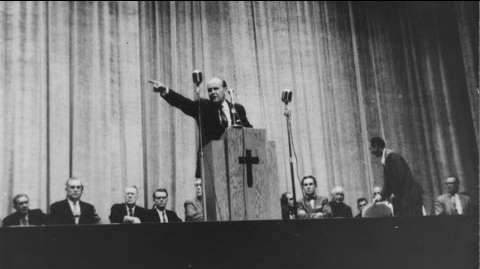

LACCUSATION
(The
Indictment)
ils Le crucifièrent là .
7 juillet
1963, soir
Branham Tabernacle
Jeffersonville Indiana, U.S.A.
Merci, frère Neville. Restons debout encore un moment pour prier. Inclinons nos têtes. Sil y a des requêtes, manifestez-le en levant la main. Présentez-les à Dieu silencieusement en vous-mêmes, en croyant de tout votre coeur, pendant que je prierai pour vous.
Père Céleste, cest pour nous un grand privilège de pouvoir entrer dans la Maison du Seigneur par cette sombre journée, dy voir briller le Soleil de Dieu, et dy entendre le chant du Saint-Esprit au travers de Son peuple, et davoir ainsi un reflet de ce Soleil dans nos coeurs. Combien nous Ten remercions!
Eh bien, il sest levé des mains parmi Ton peuple: ils ont des requêtes, et ils espèrent que Tu les exauceras, ce matin. Je Te prie, Seigneur, de répondre à chacune delles. Et il y en a tellement dautres par écrit, qui sont empilées là, sur le pupitre, et dautres encore, dun peu partout, des appels par téléphone, parfois de fort loin plus de cinquante par jour! de gens malades, souffrants. Oh Dieu! Que faire? Nous ne savons dans quelle voie nous engager, ni que faire mais Toi, Tu le sais, Seigneur; cest Toi qui nous as donné la Vie, et nous voulons Te la consacrer. Alors, Père conduis-nous!
Nous Te prions de nous bénir, alors que nous sommes assemblés pour écouter Ta Parole, pour chanter des cantiques et Te présenter nos prières. Ecoute nos prières, et puisses-Tu Te réjouir avec nous dans nos chants et nous parler par Ta Parole, car nous le demandons au Nom de Jésus. Amen!
(Vous pouvez vous asseoir).
Je ne puis mimaginer place meilleure que celle-ci, à ce pupitre, ce soir, pour y distribuer le Pain de Vie à ce peuple affamé et assoiffé et cest pour moi un grand privilège.
Dabord, laissez-moi vous parler dEdith, la soeur de Hattie, que nous avons connue lorsquelle était encore une petite fille infirme, immobilisée dans sa poussette. Maintenant, elle est devenue femme. Elle va très mal. Il y a près dune année que javais été la voir, là-bas, lorsquelle eut sa première attaque, et tout de suite, avec laide et la grâce de Dieu, javais vu de quoi il sagissait. Ses membres étaient comprimés de telle sorte quelle devait rester assise et ne pouvait bouger, tant cela lui faisait mal. Cela provenait dune terrible pression sur son système nerveux. Mais on ne pouvait pas dire expressément quil y eût un dérangement corporel autre que celui dû à la paralysie infantile quelle contracta à lâge de six mois. Alors, elle criait et pleurait presque tout le temps, jusquau jour où nous avons prié pour elle, il y a quelques années. Depuis lors, elle allait mieux, et elle se sentait heureuse comme cela, jusquà lannée dernière. Maintenant, cest la ménopause qui la trouble, provoquant ce changement dans sa vie, et ses nerfs sont dans un état pitoyable. La petite dame sest mis en tête quelle est en train de mourir, quelle va mourir dun moment à lautre.
Mais, vous savez que même des femmes de forte constitution et en parfaite santé ont alors une période difficile à passer. Il y en a à qui on doit donner des hormones, dautres qui doivent même subir des traitements de choc en clinique.
Dans la vie dun être humain, il y a deux changements. Il y a le passage de lenfance à lâge adulte, de lenfant à lhomme, de la jeune fille à la femme. Autour des seize, dix-sept ans, ils sont comme des papillons de nuit Il faut essayer de les supporter et de leur venir en aide pendant cette période. Jai une fille, Rebecca, qui a justement cet âge priez pour elle. Et un garçon, Billy. Nous passons tous par cette période un peu folle: nous devons donc souffrir avec eux et réaliser ensemble que cest quelque chose dinévitable.
Et maintenant, cest Edith qui se trouve justement dans une situation semblable. Tous les sept ans, votre vie change, et elle a sept fois sept ans. Vous voyez: cest un moment bien pénible pour elle. Cest un changement complet, et cela tourmente les femmes. Les hommes aussi, à cette période, ont un comportement bizarre: ils quittent parfois leur femme. Les femmes, elles, deviennent stériles. Nous devons tous passer par cette période difficile. Nous devons y penser et apprendre à nous supporter et à nous comprendre les uns les autres.
La petite Edith est dans cet état; elle a perdu beaucoup de poids et a mauvaise mine. Jaimerais vous demander daller la voir un de ces soirs (pas tous à la fois, bien entendu!) Vous savez, ils veillent jour et nuit Quelquun de notre tabernacle, ou dune autre communauté, ou quelque soeur dici, pourrait y aller et voir la famille Wright. Je suis sûr que cela leur ferait plaisir et quils apprécieraient ce geste. Allez-y tout simplement, passez un moment avec eux; un brin de causette, une poignée de main une simple petite visite amicale, vous savez; on oublie trop souvent cela. Mais quand il sagit de notre propre maison, alors nous lapprécions mais nous devons nous en souvenir, les autres lapprécient aussi. Allez-y! Et la famille Wright, jen suis sûr, lappréciera aussi. Je sais que vous lauriez fait sans que je vous le dise, si vous aviez su ce quil en était. Mais vous ne le saviez pas, et cest pourquoi je vous en parle ce matin.
Donc, allez voir la famille Wright, et surtout, entourez un peu Edith, et encouragez-la. Ne lui dites surtout pas quelle a mauvaise mine, mais au contraire, quelle a lair daller mieux elle ira mieux, si nous continuons à la soutenir. Cest pour cela que nous sommes ici. Cest notre soeur, et nous sommes ici pour prier et intercéder pour elle de la même manière que jaimerais que lon prie et intercède pour moi, quand je passe par des épreuves, comme vous-mêmes aimeriez que quelquun prie pour vous.
Les Wright sont parmi les membres les plus anciens qui viennent à cette assemblée, avec je suppose frère Roy Slaughter et soeur Slaughter. Je les ai vus tout à lheure, et je pensais en moi-même: «Il y a bien des années que je vois ces frère et soeur Slaughter prendre leur place dans cette église, à travers toutes ces vicissitudes, ces hauts et ces bas, et ils vont toujours de lavant!». Il en va de même avec cette famille Wright. Vous aimez de tels gens, nest-ce pas? Laissons-leur voir et sentir combien nous les aimons.
Jai un long message à donner, aujourdhui. Il sagit dune accusation. Jai aussi entendu dire quil y aurait communion et lavage des pieds, ici ce soir. Le pasteur parlera, et nous aussi, nous viendrons; si vous êtes dans les environs, alors venez aussi vous réjouir du message du pasteur ou plutôt du Seigneur. Avec ce lavage des pieds, et cette communion, nous aurons une soirée bien remplie. Aussi serions-nous heureux de vous y voir, si vous navez pas dautres engagements.
Et nous aimerions saluer Don Ruddell, notre frère, et frère Jackson (et tous ces frères qui viennent dautres communautés associées), frère Jack Palmer, là, qui dirige le groupe, là-bas en Georgie. Nous estimons de tels hommes de tout notre coeur, parce que chaque fois que nous avons des réunions et que je suis ici, ils viennent nous rendre visite. Nous nous en réjouissons.
Ce matin, japerçois mon bon ami, le Docteur Lee Vayle et sa femme. Jai dabord reconnu soeur Vayle, puis jai jeté un coup doeil pour découvrir le frère Lee jai, comme lexprime ce vieux dicton du Sud, «un oiseau à plumer» avec lui, autrement dit «un petit compte à régler» avec lui, vous comprenez? Chaque fois que je viens ici, je jette un coup doeil pour voir sil est là pour maider. Je dis alors: «Bon, si frère Lee est là, quil fasse la prédication, et moi je ferai seulement la prière pour les malades». Mais voilà, nous avions beau le chercher et tout prévoir, il restait toujours introuvable ainsi, il me reste «un oiseau à plumer» avec lui, lorsque enfin je lattraperai! Et nous sommes heureux davoir ce frère et cette soeur Vayle avec nous ce matin.
Peut-être y en a-t-il encore beaucoup, ici, que nous narrivons pas à situer. Je vois une soeur ici, qui vient de Chicago, je crois? Je connais aussi ce groupe, là, mais je ne puis me rappeler exactement leurs noms. Nous apprécions votre présence ici, doù que vous veniez.
Je vois deux frères ici, deux jeunes gens qui doivent être ordonnés dans le ministère, ce matin (ils sont nouveaux dans le ministère en tout cas). Nos deux frères de couleur de New York viennent de recevoir leur licence de lEglise de Philadelphie et passeront à cette communauté (dont ils viennent). Nous allons leur imposer les mains pour que Dieu bénisse leur ministère à New York. Nous avons deux ou trois petites communautés là-bas, dont lune est a frère Milano; nous les aimons toutes. Ainsi, nous avons ici deux serviteurs de plus pour soccuper de ces gens là-bas. Cela nous réjouit. Que le Seigneur vous bénisse abondamment!
En regardant à la ronde, jen vois beaucoup parmi vous je ne puis me rappeler leurs noms à tous, mais je sais que Lui les connaît, et comprend.
Maintenant, si notre soeur, la pianiste, ou quelquun dautre, veut venir et jouer pour nous le cantique:
Quand les charbons ardents eurent touché le prophète,
Le rendant parfaitement pur, Et que la voix de Dieu dit:
«Qui savancera pour nous?».
Alors, il répondit: «Me voici, envoie-moi!».Nous savons que, bibliquement, la consécration dun prédicateur se fait par limposition des mains. Je pense que cest là que nos frères de la communauté de «La Dernière Pluie» et ceux du groupe de Battleford sont dans lerreur, en croyant que, par limposition des mains, on confère des dons. Nous ne croyons pas cela. Nous croyons que, par limposition des mains, nous sanctionnons ce que nous avons vu. Vous comprenez? Cest un «amen!».
Lorsquils imposèrent les mains à Timothée et aux autres frères, ils avaient remarqué que les dons étaient déjà en eux. Rappelez-vous: gardant le souvenir de la foi sincère qui est en toi, qui habita dabord dans ton aïeule Lois (2 Tim. 1.5). Ils ont vu cela en Timothée, et ainsi les anciens lui imposèrent-ils les mains lors de son ordination; autrement, ils nauraient jamais imposé les mains à un homme dans lequel rien ne se serait manifesté auparavant. Comprenez-vous? Et ils ne demandaient rien dautre que la bénédiction; nous croyons tous cela. Donc, nous ne conférons pas des dons spirituels, nous les reconnaissons seulement et nous imposons les mains pour les attester, en croyant que Dieu opère de telles choses.
Jai aperçu ce matin, là tout au fond, frère Mc Kinney je crois que cest Kinney ou Mc Kinney le pasteur Méthodiste à qui nous avons récemment aussi conféré lordination ici (je crois que cest ici même, sur ce podium), pour quil puisse se joindre aux frère et soeur Dauch et à leur groupe, là-bas, dans lOhio. Oh, quand nous nous réunissons ainsi, dans ces petites bourgades, cest merveilleux! Pas de dénominations, pas détiquette ou quoi que ce soit, mais Jésus-Christ seul, et cest tout! Vous voyez? Se retrouver simplement ensemble, dans les lieux célestes.
Très bien, soeur, entonnons le cantique, juste la première strophe de «Quand les charbons ardents touchèrent le prophète» (Chantons-le ensemble, maintenant).
Quand les charbons ardents eurent touché le prophète,
Le rendant parfaitement pur, Et que la voix de Dieu dit:
«Qui savancera pour nous?».
Alors, il répondit: «Me voici, envoie-moi!».
Parle, Seigneur! Parle, Seigneur!
(Frères, avancez, si vous le désirez)
Parle, et je suis prêt à répondre
[Lassemblée continue à chanter N.d.R.]Que les autres frères prédicateurs savancent, sils le désirent, pour limposition des mains ceux des communautés associées à la nôtre: frère Ruddell, frère Lamb, et les autres.
«Parle, et je répondrai: «Seigneur, envoie-moi!».
Oh, cest par millions quils meurent
Dans le péché et la honte.
Entendez-vous leurs cris deffroi et de douleur?
Hâtez-vous, frères, courez à leur secours,
Répondez vite: «Seigneur, me voici!».
Parle, Seigneur! Parle, Seigneur!
Parle! Je Te répondrai: «Me voici!».
Parle, Seigneur! Parle, Seigneur!
Parle! et je répondrai: «Seigneur envoie-moi!».FRERE BRANHAM: «Comment vous appelez-vous, frère?».
FRERE HUNT: «Orlando Hunt».
FRERE BRANHAM: «Frère Orlando Hunt de New York, est-ce exact? Et vous, frère ?».
FRERE COLEMAN: «Joseph Coleman».
FRERE BRANHAM: «Bien, Joseph Coleman».
Eh bien, mes frères, voulez-vous vous tourner face à lassemblée? Frère Hunt et frère Coleman, tous deux avec un appel de Dieu dans leur coeur. Comme nous venons de le chanter: «Cest par millions quils meurent dans le péché et dans la honte»; ils ont entendu ces cris deffroi et de douleur! Et nous les adjurons: «Hâtez-vous, frères, hâtez-vous à leur secours!». Répondez vite: «Seigneur, me voici!». Cest ce quils répondent ce matin.
Eh bien, nous en tant que frères de cette communauté, ainsi que ce groupe, nous confirmons et sanctionnons cela, en leur imposant les mains, et leur donnons la main dassociation fraternelle pour être des témoins de Jésus-Christ. Nous les soutiendrons dans tout ce quils entreprendront dhonorable et de juste selon lEvangile. Ils seront lobjet de nos prières incessantes, pour que Dieu soit honoré par leur service. Quils aient un ministère grand et fructueux à New York, et que leur vie soit pleinement utilisée à Son service, rapportant une précieuse moisson pour Son Royaume. Puissent-ils vivre longtemps et dune vie heureuse, et puisse Dieu leur accorder le soutien permanent de Sa présence, leur accordant force et santé, les conservant à Son service jusquà ce que Jésus-Christ les appelle à la demeure éternelle et au repos céleste. Que tous dans lassemblée inclinent leur tête, pendant que nous, pasteurs, leur imposons les mains [frère Branham séloigne alors du microphone pour imposer les mains aux deux frères N.d.R.].
Notre Père Céleste, nous imposons les mains à ce frère, au Nom de Jésus-Christ, parce que tout ce que nous savons de lui, Seigneur, est juste et bien. Et nous Te remercions de cet appel au ministère que Tu as mis dans son coeur; Seigneur, parle au travers de ce frère, gagne des âmes, libère les captifs, guéris les malades, quil sagisse de maladies physiques, mentales ou spirituelles. Seigneur, accorde-lui un ministère réel et puissant, de sorte quil puisse à la fin de sa route, en regardant loin en arrière de ce long trajet, voir quil a été capable, avec laide et la grâce de Dieu, de lier et de vaincre tout ennemi.
Nous Te le demandons au Nom de Jésus-Christ, notre Seigneur. Amen!
A ce frère Coleman également nous imposons les mains, Seigneur, pour confirmer son appel au ministère et en témoignage que cette église et que ce groupe croient quil est un serviteur de Christ. Nous Te prions de le bénir et de lui accorder un grand et puissant ministère, pour gagner des âmes à son Seigneur, pour délivrer les captifs en rompant des liens dont Satan entoure les gens avec lesquels il est en contact. Donne-lui, Seigneur, une vie fructueuse et que lui aussi, lorsquil arrivera à la fin de sa route, et en regardant loin en arrière de ce long trajet, il puisse voir où, par la grâce de Jésus-Christ il a été capable de rompre tout lien de lennemi, pour la gloire de Dieu.
Père Céleste, puissent maintenant ces hommes vivre et oeuvrer dans la moisson de Dieu. Que Tes bénédictions soient sur eux et avec eux jusquau temps où nous serons tous rassemblés aux pieds de notre grand Maître. Nous Te le demandons au Nom de Jésus-Christ. Amen!
Que le Seigneur vous bénisse, frère Hunt, et vous donne un ministère fructueux! Que le Seigneur vous bénisse, frère Coleman, et vous donne aussi un ministère fructueux! Reprenons:
Quand les charbons ardents eurent touché le prophète,
Le rendant parfaitement pur, Et que la voix de Dieu dit:
«Qui savancera pour nous?»
Alors, il répondit: «Me voici, envoie-moi!»
Oh, parle, Seigneur! (quIl puisse parler
à beaucoup de jeunes coeurs) Parle, Seigneur!
(quils soient appelés de Dieu).
Parle, et je suis prêt à répondre.
Parle, Seigneur! Parle, Seigneur!
Parle! et je répondrai: «Seigneur, envoie-moi!».Combien nous remercions le Seigneur, ce matin, du grand honneur quIl fait à léglise en lui permettant dassister au départ de ces prédicateurs dans le champ de mission de ces derniers jours. Que la grâce de Dieu soit avec vous, mes frères. Jespère quIl vous enverra en campagne par tout le monde pour prêcher les richesses insondables de Jésus-Christ, là où elles font tellement défaut. Le monde en a tant besoin aujourdhui.
Pour linstant, nous avons eu tant de bonnes choses, que nous avons pris de-ci, de-là, pour lintégrer à notre culte de ce matin. Mais aujourdhui, nous avons à parler sur un sujet que, parfois, je naime pas aborder: ces temps vraiment mauvais dans lesquels nous vivons.
Sil y en a parmi vous qui nétaient pas là, dimanche passé, pour entendre ce message: Le Troisième Exode, il est enregistré sur bande magnétique, et si vous désirez lavoir, je suis sûr quil vous intéressera: Le Troisième Exode.
Quavons-nous ici? Un garçon malade? Oh, un petit infirme! Oui, que Dieu le bénisse. Bien. De toute manière, nous prierons pour les malades à la fin du culte.
Essayez de vous procurer ce message Le Troisième Exode. Cest dans ce Troisième Exode que la Lumière (lAnge du Seigneur), qui appelle les hommes à un exode, sest montrée visiblement sur terre, dans un exode. Vous voyez, pour moi, cest vraiment quelque chose dextraordinaire: Le Troisième Exode.
Vous permettez que jenlève ma veste? Il fait terriblement chaud ici, ce matin, et la seule ventilation possible, cest de vous éventer vous-mêmes. Nous projetons dinstaller lair conditionné, aussitôt que possible.
Cela me ferait plaisir, si vous aviez envie découter ce message Le Troisième Exode. Nous avons eu beaucoup dexodes, cependant, nous pouvons discerner le lieu et le temps de trois exodes où Dieu, dans la Colonne de feu, est descendu pour appeler des hommes et les mettre à part. En ce moment même, un peuple est mis à part. Nous voyons que, lorsquIl déclencha le premier exode, Il marchait devant eux dans une Colonne de feu pour les conduire dans un pays où, plus tard, Il leur apparaîtrait sous la forme dun homme appelé Jésus-Christ (Il venait de Dieu, et retourna à Dieu). Et après cela, Il fut rejeté. Il vint ensuite pour libérer les hommes dune sujétion semblable à celle dans laquelle ils se trouvaient en Egypte, où ils se livraient au péché en adoptant la façon de vivre des Egyptiens. Et Dieu les appela à sortir.
Ensuite, nous les voyons pour la seconde fois se laisser emmener en captivité sous lEmpire Romain. Ils se laissent entraîner dans les credo, et séloignent de ladoration vraie et sincère; et Dieu déclencha un nouvel exode. Il apparut sous la forme dun homme conduisant dautres hommes.
Dans le premier exode, Il était une Colonne de feu. Ensuite, Il vint sur la terre dans lAgneau, auquel Il les conduisit Quel magnifique symbole de ce Millénium vers lequel Il conduit Son Eglise maintenant. Nous Le verrons alors tel quIl est. Nous aurons un corps semblable à Son corps glorieux.
Et aujourdhui, par la Lumière de lEvangile, reflet de cette Lumière, une Colonne de feu a été rendue visible au milieu de nous La science La vue; Elle a paru dans les journaux du monde entier, reconnue scientifiquement et spirituellement comme étant la même Colonne de feu, avec les mêmes signes et les mêmes choses qui Lont toujours accompagnée.
Et maintenant même, malgré ce fanatisme et tout le reste, Dieu na pas cessé de révéler Son identité. Quelle chose glorieuse que de savoir quun jour ce tabernacle terrestre, ce corps frêle, malade et affligé, sera transformé en un corps glorieux, semblable au Sien! Alors, nous Le verrons tel quIl est, et nous serons avec Lui dans ce pays vers lequel nous commençons déjà aujourdhui à nous diriger.
Oh! Cela nous donne toujours envie de nous lever pour chanter: «Je marche vers la Terre Promise!». Ils vont probablement chanter ce cantique, tout à lheure, au service de baptême car cest précisément notre cantique de baptême.
Maintenant, à vous frères ici présents, et à ceux des pays où iront ces bandes enregistrées (qui vont dans le monde entier): ces messages ne sont pas destinés individuellement à certaines personnes. Nous ne voudrions pas que lon croie que nous sommes une bande de fanatiques, qui se sont rassemblés après sêtre séparés des autres, étant contre les hommes, contre Dieu, ou contre léglise. Nous sommes pour lEglise, mais nous essayons seulement de déterminer, par le Saint-Esprit et avec Son aide, les raisons qui nous conduisent à cette séparation. Nous croyons que les églises ne devraient pas se séparer, mais plutôt avoir communion entre elles: les Méthodistes dans leur groupe, les Baptistes dans le leur, et les Unitaires, et les Trinitaires, et que sais-je encore, tous ceux qui sont séparés les uns des autres. Nous croyons que tous devraient être ensemble en un grand groupe uni du Corps de Jésus-Christ, attendant Sa glorieuse venue. Ils ne devraient pas du tout être séparés.
Il doit nécessairement y avoir une raison fondamentale pour que nous soyons séparés au lieu dêtre unis. En considérant les choses, je maperçois que cela na aucun rapport avec la couleur de notre peau; en effet, que nous soyons jaune, noir, brun ou blanc, tous nous sommes séparés en différentes organisations. Cela nest pas dû non plus à notre nourriture. Tous nous mangeons la même nourriture, nous nous vêtons tous de la même manière, et ainsi de suite. Mais je vois ce qui cloche, dans tout cela: cest que lhomme est sorti du chemin tracé par lenseignement de lEvangile. Il doit y avoir un moyen de montrer dune manière bien définie ce qui est juste et ce qui est faux. Et ce moyen, le seul que vous puissiez jamais employer, cest de ne jamais donner une interprétation de la Parole, mais de la lire telle quElle est et de la croire de même. Quiconque donne sa propre interprétation Lui fait dire quelque chose de différent.
Cela nous ramène à lorigine de lorganisation de léglise Catholique; léglise Catholique croit que Dieu est dans son église, et que la Parole na rien à voir là-dedans Dieu est dans Son église. Mais, pour nous, Protestants, nous voyons dans Apocalypse 17 quils se rassemblèrent, léglise Catholique étant la mère de toutes les organisations. Et nous voyons que lorganisation protestante (pauvres aveugles!), a la même nature que léglise Catholique. La Bible dit que léglise Catholique est une prostituée, et appelle léglise Protestante: «prostituée». Elle dit que la grande prostituée est mère dautres prostituées. Et, chers amis, vous savez quelle mauvaise réputation a la femme qui nest pas restée fidèle aux voeux de son mariage. Et nous qui prétendons tous être lEpouse de Christ, et qui sommes pourtant si infidèles! En quoi sommes-nous infidèles? En vivant en contradiction avec la règle établie par Dieu (la Bible) pour Son Epouse: cest là mon opinion personnelle. Je crois que la Bible est la Parole infaillible de Dieu. Et nous sommes donc amenés à constater que léglise Protestante va même jusquà se séparer des Ecritures pour établir sa propre organisation.
Les prédicateurs consacrés, les pasteurs, sattachent à des choses qui ils viennent par centaines chez moi, à mon bureau, ou dans les salles de réunions, pour me dire: «Frère Branham, vous en provoquez des gens, par vos défis! Mais personne ne les relève, car ils savent bien que cest la vérité».
Alors, je leur demande: «Pourquoi nagissez-vous pas en conséquence?».
Ils me répondent: «Parce qualors je naurais plus quà men aller mendier. Jai un ministère; je dois servir le Seigneur et Son peuple; sinon, je naurai aucun soutien matériel».
Rendez-vous compte que cest Christ qui est notre soutien! La Bible est notre soutien! Voyez-vous? Cela place léglise Protestante sur le même pied que léglise Catholique.
Je nirai pas jusquà dire que léglise Catholique ne se soucie pas de la Bible; ils croient la Bible, oui, mais ils ont aussi une succession apostolique sur laquelle est fondée léglise Catholique: cest la succession des papes; et ils disent que Pierre est le premier pape. Ils croient cela ils y croient de tout leur coeur.
De même, les Protestants, eux aussi, se sont rassemblés pour former une organisation, comme léglise Catholique, qui sorganisa au Concile de Nicée. Nous voyons bien que tous les deux sont semblables, les deux font la même chose: ils abandonnent la Parole de Dieu pour établir une organisation. Ainsi, lorsquon en vient à toutes ces grandes Vérités qui semblent insolites de nos jours, elles leur sont étrangères, parce que leur enseignement vient dun rituel. Nous navons pas de rituel en dehors de la Bible. Nous navons rien dautre que la Sainte Parole de Dieu, et nous nous y tenons fermement.
Aujourdhui, jaimerais, pendant quelques instants, vous lire certains passages des Ecritures, de la Parole de Dieu sainte et sacrée; ce sera le point de départ et la base de ce dont je désire parler aujourdhui, une pensée fondamentale que je voudrais développer. Lisons dans Luc, chapitre 23, verset 33; cest le seul verset dont jaurai besoin aujourdhui: Lorsquils furent arrivés au lieu appelé Crâne, ils le crucifièrent là, ainsi que les deux malfaiteurs, lun à droite, lautre à gauche.
Maintenant, je prends quatre mots de cette lecture, qui seront la base de mon sujet: Ils Le crucifièrent là: quatre mots. Et jintitulerai mon sujet: «Jaccuse les églises dénominationnelles du temps présent, et aussi de nombreuses communautés indépendantes, de crucifier Jésus-Christ à nouveau de nos jours». Voilà de quoi je les accuse!
Ce matin, ma prédication se nomme LAccusation. Et je vais considérer cette salle comme une sorte de tribunal. Après tout, léglise et sa chaire sont bien un tribunal! La Bible dit que le jugement doit commencer par la maison de Dieu. Représentez-vous donc, ici, le trône, là, le jury; puis les témoins, etc.
Mais aujourdhui, jai pour témoin la Parole de Dieu, et mon accusation est contre les églises actuelles. Je nimplique pas le pécheur individuellement, dans tout cela, mais jaccuse léglise en tant que communauté. Cela sera enregistré sur bande, et jessaierai daller aussi vite que possible.
Jaccuse cette génération davoir crucifié Jésus-Christ une deuxième fois!
Pour porter une telle accusation à lépoque où nous vivons, il faut aussi apporter des preuves. Pour soutenir laccusation, il faut une déposition qui établisse le délit criminel. Pour les accuser, je dois fournir des preuves qui puissent être soutenues tout au long de la procédure, et apportées devant le Juge, le Juge Suprême. Pour soutenir cette accusation, je vais prendre la place du procureur.
La Parole de Dieu étant mon témoin, jaccuse cette génération de la crucifixion. Je dois démontrer, et je démontrerai que lesprit des gens qui a amené la première crucifixion, est le même qui agit aujourdhui. Je dois démontrer que les gens daujourdhui agissent de la même manière, spirituellement, envers Jésus-Christ, que lorsquils Le crucifièrent physiquement, Lui, Jésus-Christ, le Fils de Dieu.
Et aujourdhui, par la même Parole, par le même Saint-Esprit, jaimerais montrer où en sont les églises: elles agissent aujourdhui de la même manière, comme la Bible dit quelles le feraient; et je dois prouver que nous vivons cela en ce moment même où je vous parle.
Il y a quelques années, cinquante ans par exemple, on naurait pas pu faire ce procès. Mais aujourdhui, lheure a sonné; il y a dix ans, cela aurait été trop tôt; mais aujourdhui, cela est possible, parce que les temps sont révolus nous sommes au temps de la fin. Et je crois, en tant que Son serviteur, que nous sommes sur le point de quitter cette terre pour nous en aller ailleurs.
Par conséquent, le temps de la repentance pour une nation est révolu; je ne crois pas que cette nation puisse encore se repentir. Je crois que nous venons de passer la frontière entre la grâce et le jugement; en tout cas, la balance oscille pour passer de lune à lautre.
«Frère Branham, avant dentamer votre procédure, comment allez-vous prouver cela?». A cela, je réponds simplement: «Cest parce que nous sommes coupables des mêmes péchés à cause desquels Dieu détruisit le monde antédiluvien. Nous sommes coupables des mêmes péchés qui ont amené la destruction de Sodome et de Gomorrhe Et nous avons tous devant nous les mêmes signes, connus du monde entier, qui ont apporté la grâce de Dieu à ces générations et qui, rejetés, ont apporté le jugement. Ainsi donc, si cette génération a rejeté la même grâce quont rejetée les autres, alors Dieu serait injuste sIl la laissait aller sans jugement».
Comme le disait un jour un de mes amis, Jack Moore: «Si cette nation devait sen tirer sans punition de Dieu, alors Dieu devrait relever de leurs ruines Sodome et Gomorrhe, et leur demander pardon de les avoir détruites».
Nous savons que, spirituellement, ils font la même chose aujourdhui; ils le font pour les mêmes motifs et de la même manière quils crucifièrent alors physiquement le Seigneur. Ils le font par jalousie, parce quils sont aveugles spirituellement, parce quils ne veulent pas voir ni entendre. Jésus, lors de Son passage sur cette terre, a dit: Esaïe a bien prophétisé de vous, lorsquil a dit: Vous avez des yeux et vous ne voyez pas, et des oreilles, et vous nentendez pas. Comprenez-vous?
Cest pour la même raison, le même motif et au moyen des mêmes arguments quils crucifient à nouveau le Christ (nous verrons cela plus loin), comme ils le firent autrefois. Ils nont rien à répondre à cela et ils noseraient pas le contredire. Ils savent que les preuves sont là, et ils savent que cest la Bible qui le dit. La seule chose quils puissent faire, cest de blasphémer. Cest bien ce quils font.
Cest sur cette base que jaccuse cette génération de crucifier Jésus-Christ ils crucifient, ils sont coupables. Cest avec des mains sales, perverses, égoïstes, dénominationnelles, quils crucifient le Prince de la Vie qui voulait se révéler aux hommes.
Vous dites: «Cest la même personne?».
Au commencement était la Parole, et la Parole était avec Dieu, et la Parole était Dieu. et la Parole a été faite chair et elle sest manifestée. La Parole a été manifestée dans la chair, et ils ont condamné cette chair, et Lont mise à mort parce que la Parole a été manifestée. Hébreux 13.8 dit: Jésus-Christ est le même hier, aujourdhui, et éternellement. Cest la même Parole, vous voyez. Et pour les mêmes raisons, ils cherchent à crucifier la Parole.
Maintenant, revenons au texte que je voulais commenter, ces quatre mots: ils Le crucifièrent là [En angl.: Là, ils Le crucifièrent N.d.T.] Expliquons le là là, dans la ville la plus sainte du monde, Jérusalem. Là, dans la ville la plus religieuse du monde. Là, ils le peuple le plus religieux du monde, lors dune fête religieuse, la Pâque Là, le lieu le plus religieux, la cité la plus religieuse la plus grande de toutes les organisations, leur grand quartier général, là, ils, les gens les plus religieux du monde, sétaient rassemblés de partout. Ils Le crucifièrent, ce qui est la mort la plus ignominieuse, Le laissant nu, après Lui avoir arraché Ses vêtements. Sur les crucifix, on voit un linge autour de Ses reins; mais là, ils Lui avaient arraché tous Ses vêtements Là (la ville la plus religieuse), ils (le peuple le plus religieux) Le (la Personne la plus précieuse) crucifièrent (la mort la plus ignominieuse).
Nest-ce pas suffisant pour condamner cette génération! Là, la plus religieuse des organisations, le rassemblement de la plus grande de toutes les églises; ils, eux, le peuple le plus religieux de tous les peuples; eux qui étaient censés être les vrais adorateurs de Dieu ils sassemblèrent pour la plus sainte de toutes leurs fêtes, pour la purification de la Pâque, la fête célébrant leur passage de lesclavage à la liberté. Et cest là quen ce temps, eux, le peuple le plus religieux, lors de la plus sainte de toutes leurs fêtes religieuses, célébrée dans le lieu le plus saint, firent au Prince de la Vie le plus odieux des outrages: ils Le dépouillèrent de Ses vêtements et Le clouèrent sur une croix; parce que la loi dans laquelle ils adoraient dit: Maudit est quiconque est pendu au bois. Et Il fut fait malédiction pour nous. Ils Lont dépouillé, frappé, bafoué, Lui, le vrai Dieu du Ciel; ils Lui arrachèrent Ses vêtements et Le clouèrent sur une croix. Là, ils Le crucifièrent, Lui, Lui infligeant la peine capitale des Romains.
De nos jours, la mort la plus ignominieuse nest pas de recevoir un coup de fusil, dêtre écrasé par une automobile, de mourir dans un incendie ou de se noyer Non! La mort la plus ignominieuse, de nos jours, cest la peine capitale, par laquelle le monde entier vous déclare coupable et vous condamne. Et le monde entier porta la main sur cet Homme, Le déclarant coupable, alors quIl était innocent. Il mourut sous la loi de lennemi, et non par celle de Ses amis; non par Ses propres lois, mais crucifié par la crucifixion de lennemi, Lui, le Prince de la Vie, lEtre le plus précieux quil y ait jamais eu et quil y aura jamais; Jésus-Christ Lui, lEtre le plus noble! Gardez toujours cela à lesprit, pendant que nous étudions ce sujet aujourdhui.
Pouvez-vous imaginer un endroit comme Jérusalem, il y a 2500 ans ou plus jexagère peut-être un peu; il pouvait ny avoir que huit ou neuf cents ans je ne sais pas exactement à quelle époque Salomon bâtit le Temple mais déjà ils attendaient la venue dun Messie ils se rassemblaient là pour célébrer la Pâque. Pensez donc: les chefs de tous les Pharisiens, Sadducéens, et autres, tous rassemblés pour adorer Dieu. Cest à Jérusalem, la Ville Sainte, où sélevait le Temple du Seigneur cest là que le peuple du Seigneur sempara du Seigneur Lui-même pour Le crucifier, Lui infligeant ainsi la peine capitale. Quelle chose terrible!
Revenons à ces quatre mots: Là, ils le crucifièrent. Regardez dans votre Bible: il ny a que ces quatre mots. Mais la Bible condense ses Vérités en peu de mots, tandis que moi, je dois faire un détour et expliquer ce que je veux dire mais la Bible na pas besoin dexpliquer quoi que ce soit: cest la Vérité toute simple qui se trouve là. Et ce sont là quatre mots faisant partie de cette grande chaîne de la Vérité. Je vais essayer dexpliquer cela. Mais, pour lexpliquer clairement, il faudrait toute une bibliothèque. Je ne sais comment je vais expliquer ces quatre mots. Mais maintenant, essayons, avec laide de Celui qui les a inspirés pour être écrits, de commenter ces quatre mots de telle manière que tous puissent comprendre.
Quavons-nous donc devant nous? Nous avons la première crucifixion, à lendroit le plus saint et devant le peuple le plus religieux, la mort la plus honteuse de la plus précieuse Personne. Oh, quelle contradiction! Quelle abomination!
Pour commencer, reprenons le premier mot: Là. Parlons-en quelques instants, avant daborder la condamnation. Nous allons lexaminer et vous montrer ce quils ont fait, et ainsi nous saurons si mon accusation est juste ou non. Là Jérusalem le lieu très saint, parce que cest là que sélevait le Temple et que les Juifs du monde entier se réunissaient, un lieu de rassemblement pour le culte dadoration. Le lieu de culte et dadoration par excellence, Jérusalem, là où sélevait le Temple. Comme il est écrit: Cest à Jérusalem que tous les hommes doivent adorer. Il en est ainsi, parce que cest un centre dadoration.
Aujourdhui, vous pouvez les entendre dire: «Oh! nous allons à ces grandes conventions», ces conventions tenues par telle ou telle dénomination. Et puis, nous avons encore ces cérémonies au Vatican, le sacre des papes, etc. Chacun dit: «Nous devrions tous aller aux Assemblées des Méthodistes», ou «des Baptistes», ou «Il nous faut tous aller à Rome». là où se trouve, disent-ils, le grand centre de la Chrétienté.
Pendant la dernière guerre, lorsque Rome tomba, les soldats allemands (plusieurs dentre vous savent cela) se retiraient dans la Cité du Vatican et tirèrent sur les Américains, lorsque ceux-ci avancèrent. Frère Funk et frère Robertson, frère Beeler et plusieurs des frères qui firent la guerre, savent cela. Et savez-vous ce qui est arrivé? Des ordres furent donnés aux Américains de ne pas tirer sur cette ville! Vous, vous deviez rester là, comme une cible pour les autres. Mais sur lAbbaye de Westminster à Londres, on pouvait tirer tant quon voulait. Là, étaient rassemblés les Protestants, alors là, on pouvait tirer. Mais pas sur le Vatican, parce que le Président Roosevelt Jai entendu son discours à la radio, ce soir-là, dans lémission radiophonique «Conversation au coin du feu». Il disait: «Quelle honte que Rome soit tombée! Rome, la capitale de toute la Chrétienté!». Pouvez-vous imaginer un Protestant disant une chose pareille?
Ce grand centre de la religion chrétienne, nous allons le comparer, le mettre en parallèle avec Jérusalem, si vous le voulez bien. A la tête, il y avait le Sanhédrin, les Pharisiens, les Sadducéens, et tous ceux-là se rendaient à Jérusalem. Cétait réellement le quartier général.
En ce qui concerne les organisations, vous devez admettre que léglise Catholique Romaine en est bien la mère. Cest certain. Et cela a commencé à la Pentecôte. Cest bien le chemin quils prirent, lorsquils commencèrent à sorganiser. Et maintenant, nous autres Protestants, nos communautés sont les soeurs cadettes de cette église.
Je dirai quil en est aujourdhui du Vatican comme autrefois de Jérusalem, où tous devaient se rendre pour adorer. Pourquoi le firent-ils, au temps de Jésus? Pourquoi disaient-ils que tous les hommes devaient adorer à Jérusalem? Parce quil ny a quun seul lieu où Dieu puisse entrer en communion avec les hommes: cest sous le Sang du sacrifice. Cest la raison pour laquelle ils devaient venir à Jérusalem. Dieu ne rencontrera lhomme nulle part ailleurs que sous le Sang. Si vous rejetez le Sang, alors le lieu de rencontre avec Dieu est enlevé. Cest au jardin dEden que Dieu prit Sa première décision, à savoir, que lhomme ne pourrait Ladorer que sous laspersion du Sang du sacrifice. Cétait alors le seul lieu où Dieu rencontrait lhomme; cest le seul lieu où Dieu rencontra jamais lhomme. Et aujourdhui, le seul lieu où Il rencontre lhomme est sous laspersion du Sang du sacrifice.
Peu importe que vous soyez Méthodiste, Baptiste, Presbytérien; si vous oubliez vos différences, même si vous êtes Catholique Romain, et que vous vous placez sous le Sang, cest là que Dieu rencontrera chacun de vous. Cest là que nous pouvons tous nous rencontrer et communier sur le même fondement. Mais autrement, ce nest pas parce que vous êtes un Méthodiste ou un Pentecôtiste quil vous rencontrera. Il ne vous agréera quà une seule condition: cest que vous soyez sous laspersion du Sang, lorsque vos péchés auront été confessés et rejetés de Sa Présence. Le Sang est toujours devant Lui, et ce nest quau travers de leffusion du Sang quIl peut vous voir. Vous êtes plus blanc que neige, lorsque vous avez confessé vos péchés; autrement, cest comme si vous nexistiez pas: vous ne pouvez avoir de communion avec Lui.
Cest pourquoi vous ne voyez aucune manifestation se produire dans les églises; ils admettent bien croire au Sang, mais refusent de suivre la voie (la Parole) qui permet daccéder au Sang. Il ny a quune seule voie par laquelle Dieu confirmera la Parole. Vous nhonorerez jamais la Parole si vous venez en disant: «Je suis Catholique Romain; jexige que ceci ou cela soit fait!». Cest impossible! Vous, Méthodistes, Baptistes ou Pentecôtistes, vous ne le pouvez pas non plus. Le seul chemin pour y parvenir est de vous placer sous la miséricorde de Dieu par Sa grâce, sous laspersion du Sang de Jésus-Christ. Alors, vous dites: «Seigneur, jen appelle à Ta promesse!». Et ainsi, si vous êtes véritablement sous ce Sang, Dieu est engagé par Sa Parole. Mais dabord, vous devez être sous ce Sang. Comprenez-vous, maintenant?
Il nest pas étonnant quils ne puissent pas croire aux miracles. Il nest pas étonnant que vous ne puissiez pas croire au surnaturel. Il nest pas étonnant quils le condamnent. Ils le condamnent de nos jours pour les mêmes raisons quils le condamnaient alors. Vous êtes aussi coupables quon peut lêtre, si vous nêtes pas sous laspersion du Sang Quun humble frère, en toute humilité, ose prendre Dieu au mot, savançant et confessant ses péchés, oubliant ces dogmes et toutes ces choses pour se placer sous le Sang et y croyant, alors ils le traitent de fanatique! Alors, ils voudront le classer ce nest pas une expression à utiliser en chaire, mais cest pour me faire comprendre, ils diront de lui que cest un drôle de type. Après tout, ne sommes-nous pas tous des drôles de types? Le croyant paraît bizarre à lincroyant, comme lincroyant paraît bizarre au croyant. Alors, qui est bizarre? Qui est original? Le fermier est un drôle de type pour le commerçant, comme celui-ci lest pour le fermier. Vous voyez? Qui est normal, et qui ne lest pas?
Je vous le dis, le salut est une affaire individuelle entre lhomme et Dieu seul: je veux dire lorsquun homme cherche son salut avec crainte et tremblement. Pour moi, ce matin, en tant que prédicateur ou ministre de Christ je ne vois pas dautre fondement pour exposer cette doctrine que celui de la Parole. Je ne connais aucune autre base.
Ainsi, nous voyons que cest seulement sous le Sang que Dieu peut rencontrer ladorateur: ils allaient tous à Jérusalem. Et Christ est lAgneau du sacrifice fourni par Dieu. Aujourdhui, il ny a quun seul lieu où Dieu puisse rencontrer lhomme: cest sous le Sang de Jésus-Christ. Partout ailleurs, il est condamné; Dieu nentendra jamais sa prière. Vous pourrez mettre en oeuvre tout ce que vous voudrez, tous les ismes possibles; vous pourrez y mettre tous les sentiments et toutes les émotions, et gesticuler, sauter, vous agiter de toutes manières, faire apparaître sang, feu ou fumée et tout le reste aussi longtemps que cette vie nest pas conforme à la Parole et que Dieu ne la pas pleinement identifiée, cela ne servira même à rien dessayer, parce que vous êtes en dehors. Dieu ne vous agréera pas aussi longtemps que vous ne serez pas sous le Sang. Cest ainsi.
Ainsi, vous voyez dans lEcriture que nous avons une Jérusalem (cest lEglise qui la); elle est dans le ciel, cest une Jérusalem céleste, où Dieu est Dieu. Et aujourdhui, ce nest pas sur un credo quelconque ou sur quelque chose de semblable que nous essayons dédifier une Jérusalem. Les Méthodistes voudraient établir leur quartier général à Jérusalem; les Catholiques voudraient, eux, que ce soit à Rome; et il en va ainsi des différents lieux où nous avons nos quartiers généraux: nous voudrions en faire notre Jérusalem. Mais la Bible dit que notre Jérusalem vient dEn Haut, et quelle est la mère de tous les croyants.
Ainsi, Christ est lAgneau donné par Dieu. Voyez comme Sa venue fut opportune, puisque la Jérusalem de ce temps-là était en train de disparaître. Quand? Elle avait eu son importance jusquà cette heure; le sang dun agneau suffisait jusquà ce jour. Mais, depuis la crucifixion, tout a changé. Lancien système nest plus. Il y en avait un nouveau, où lAgneau Lui-même était le Sacrifice. LAgneau, lAgneau du sacrifice, en était le fondement. Ils Le maudirent, et firent ainsi exactement ce quil fallait quils fissent.
Dieu soit loué! Il nous a fait voir cette admirable et céleste lumière, en ces jours de la fin, où les églises font ces mêmes choses. A cette heure, la religion organisée est condamnée, la preuve étant donnée quelle a sacrifié la Parole de Christ, et que, dès lors, cest la Parole, et la Parole seule qui paraît. Lagneau pascal dalors nest plus cest Christ, maintenant, qui devient lAgneau au jour de la crucifixion. Et le jour où les dénominations crucifièrent la Parole de Dieu pour lui substituer des credo, cest précisément le jour où la Parole a pris son plein effet et toute sa force. Cela vient de se produire, récemment.
Deuxièmement, remarquez: (premièrement, cétait là, à Jérusalem); deuxièmement, cest ils. Qui, ils? Les Juifs, les adorateurs. Pensez donc: ce sont les adorateurs eux-mêmes qui vont mettre à mort Celui-là même quils prétendent adorer! Pouvez-vous imaginer une chose pareille? Que des hommes intelligents aient pu faire cela; des prêtres, des docteurs, gens instruits de père en fils, et qui devaient descendre dune certaine lignée, dune certaine tribu, pour être admis à ce titre ou accéder à la prêtrise: il fallait quils soient Lévites. Leurs pères étaient prêtres, leurs grands-pères étaient prêtres, leurs arrière, arrière, arrière-grands-pères étaient prêtres. Et ils devaient vivre une vie si consacrée, quun seul iota trouvé contre eux suffisait à les faire lapider sans recours et sans grâce! Saints? Certainement, mais dune sainteté fabriquée par eux-mêmes. Ils devaient se présenter de la sorte, sils voulaient être quelquun dans leur église. Mais Jésus disait deux: Au-dedans, vous êtes remplis dossements de morts.
Sil y a quelquun contre qui je pourrais, sur ce point, porter une accusation, cest ceux qui, bien que sachant que cette Parole est la vérité, font des compromis à seule fin de se faire valoir au sein dune organisation. Jai bien là le droit de les accuser selon la Parole de Dieu.
Notez bien: Ils cétaient les adorateurs, ceux qui recherchaient la promesse et qui, pendant des années et des siècles, ne faisaient rien dautre que de tenir des séminaires; mais ils disséquèrent et adaptèrent tant et si bien cette Parole, selon lenseignement de ces séminaires, quils finirent par passer à côté de Sa vérité essentielle. Ils, les prêtres, les prédicateurs de ce temps-là. Là, à leur quartier général, ils mettaient à mort Dieu Lui-même, lAgneau Lui-même! Ils mettaient à mort Celui-là même quils prétendaient adorer!
Et aujourdhui, jaccuse cette bande de prédicateurs consacrés! Je les accuse de crucifier par leurs credo et leurs dénominations le Dieu même quils prétendent aimer et servir. Jaccuse ces prédicateurs au Nom du Seigneur Jésus, à cause de leurs doctrines qui prétendent que le temps des miracles est révolu et que le baptême par immersion au Nom du Seigneur Jésus-Christ nest pas juste, ni suffisant. A cause de chacune des paroles auxquelles ils ont substitué des credo, je les déclare COUPABLES; le Sang de Jésus-Christ est sur leurs mains, et je les accuse de crucifier le Seigneur Jésus pour la seconde fois. Ils continuent à crucifier Christ, privant le peuple de ce quils sont censés lui apporter, et y substituant des credo déglise qui leur acquièrent la popularité.
Là, ils ceux qui auraient dû avoir la connaissance, et si quelquun devait avoir la connaissance, cétait bien ces prédicateurs! Si, de nos jours, quelquun doit avoir la connaissance, nest-ce pas le clergé, les évêques, les archevêques, les prédicateurs et les docteurs en théologie? Mais pourquoi ne lont-ils pas? Oh, quelle contradiction! Quelle contradiction navons-nous pas là! Ils prétendent rendre un culte à Dieu, et ils mettent à mort le Prince de la Vie!
Ils le crucifièrent là, et voici quils font à nouveau la même chose, car Il est la Parole; cest ce quIl est aujourdhui: le rayonnement de la Parole, cherchant quelquun en qui se refléter.
Et ces gens-là éloignent ceux qui voudraient sapprocher de Dieu! Si quelque chose dinhabituel se produit au sein de lassemblée, ils le condamnent du haut de la chaire, en disant: «Cest du fanatisme. Restez en dehors de tout cela!». En ce faisant, ils crucifient Jésus-Christ en cette année 1963, et ils sont aussi coupables que ceux qui Le crucifièrent la première fois. Cest une terrible constatation, mais cest la vérité.
Cest ce quils font pareillement aujourdhui. Et cest pour cette raison, parce quils crucifient Christ, quils enlèvent la Parole, et en privent le peuple cest exactement ce quils firent alors. Cette Parole même que Dieu avait reflétée dans Son propre Fils, pour prouver que la Parole était Dieu, Celui-là même quils prétendaient aimer, ce Jéhovah qui sétait manifesté dans les Ecritures, agissant exactement comme Il lavait annoncé, et se reflétant ainsi devant eux. Mais, par amour pour leurs groupes déglises et choses semblables, ils condamnèrent le Prince de la Vie. Et moi, aujourdhui, je condamne ces mêmes groupes et les accuse dêtre coupables devant Dieu, par la Parole de Dieu, de faire la même chose. Cette génération est accusée.
Pensez à Hébreux 13.8: Il est le même hier, aujourdhui, et éternellement.
Comment pouvaient-ils Laccuser? Parce que leurs credo ne pouvaient Laccepter. Pourtant, au fond de leur coeur, ils connaissaient la vérité. Nicodème, au troisième chapitre de Jean, ne la-t-il pas bien exprimé ainsi: Rabbi, nous savons (nous, les Pharisiens, les prédicateurs, les docteurs de la loi) que Tu es un docteur venu de Dieu, car personne ne peut faire ces miracles que Tu fais, si Dieu nest avec lui? Vous voyez? Ils ont témoigné publiquement par un des leurs, un homme de renom et pourtant, à cause de leurs credo, ils ont crucifié Christ. Et aujourdhui, chacun peut lire dans Actes 2, verset 38, ce que jy lis moi-même, et le reste à lavenant. Mais à cause de leurs credo, de létiquette dénominationnelle quils portent bien en vue, de leur carte de membre quils exhibent à la ronde (la marque même de la bête) En sattachant à ces choses, ils crucifient à nouveau Jésus-Christ pour leur part, ils Le crucifient publiquement, blasphémant ce Dieu même qui avait fait les promesses, et amenant la condamnation sur cette génération.
Ils non pas les hommes pécheurs, mais ils, léglise de ce temps-là ils étaient irrités par cet Homme qui était la Parole, ils trouvaient à redire à cet Homme qui était la Parole. Et maintenant, ils trouvent à redire à la Parole agissant au travers de lhomme. Vous voyez? (après sêtre dressés contre lUn, ils se tournent contre lautre), qui est le Saint-Esprit venu dans la chair, la confirmation de Dieu. Comment pouvaient-ils savoir quIl était Christ? Parce que Ses oeuvres prouvaient quIl Létait. Il disait: Qui de vous me convaincra de péché? Si je nai pas accompli très exactement les oeuvres annoncées dans les Ecritures que quelquun me dise où jai manqué, ou en quoi je nai pas accompli chaque signe par lequel on connaîtrait que je suis le Messie, que je suis bien Celui-là même qui vous a été promis!.
Ils dirent: Nous avons Moïse. Nous croyons Moïse.
Il leur dit: Si vous aviez cru Moïse, vous me croiriez aussi. Moïse a vu mon jour, et a désiré vivre en ce jour. Moïse lavait vu de loin, dans les prophéties. Et vous vous vivez ces choses en ce moment même et vous condamnez. Hypocrites! Vous savez discerner laspect du ciel, et vous ne pouvez discerner les signes des temps. Il est là, le signe des temps.
Quelle impression fit-Il sur eux que dirent-ils de Lui? Un fanatique, un toqué! Oui, ils trouvaient à redire à lHomme qui était la Parole. Il était la Parole. Jean, au premier chapitre, le démontre:
Au commencement était la Parole, et la Parole était avec Dieu, et la Parole était Dieu Et la Parole a été faite chair, et elle a habité parmi nous .
Il était la Parole Vivante de Dieu, parce quIl était en Lui-même lexpression de Dieu. Il était si parfaitement soumis à la Parole, que Lui et la Parole étaient Un. Et cest exactement ce que lEglise devrait être aujourdhui: une avec la Parole de Dieu. Comment le seriez-vous, comment seriez-vous une part de cette Parole, si vous la rejetez presque entièrement? La raison de cela ne se trouve pas dans lhomme lui-même. Et cest la raison pour laquelle je pense que Dieu ma parlé et dit pourquoi ces gens se font appeler Ricky et Ricketta. Ce sont ces dénominations égoïstes qui poussent ces gens à vivre là-bas comme ils le font. Elles ont crucifié la Vérité, et les gens disent quElle est un blasphème, ou plutôt ils en font un blasphème. Ils disent que cest du fanatisme, etc., et ils ne savent pas quils blasphèment le Dieu même quils vont servir dans leurs églises.
Cest pourquoi, jaccuse aujourdhui cette bande du clergé; jaccuse cette génération au Nom du Seigneur Jésus-Christ et avec lautorité de la Parole de Dieu: Vous Le crucifiez à nouveau!
Notez bien ceci: Il est le même hier, aujourdhui, et éternellement. La Parole de Dieu confirmée dans un homme.
Comparez les deux Calvaires, et les deux accusations. Rappelez-vous: Parce quIl sest fait lui-même Dieu, nous ne voulons pas que cet homme règne sur nous. Quelle accusation avaient-ils trouvé dans leur conseil, ce matin-là, lorsquils crucifièrent Jésus? QuIl sétait fait Lui-même Dieu et pourtant, Il était Dieu; quIl avait violé le Sabbat pourtant, Il était le Maître du Sabbat. Ils Le condamnèrent, parce quIl sétait fait Lui-même Dieu. Tu nas pas le droit de faire cela. Tu nas pas le droit. Notre grand prêtre Si quelque chose doit arriver, que ce soit alors par nos prêtres.
Et maintenant, comparez cela avec le Calvaire daujourdhui. Quand Dieu (ainsi plut-il au Père, Dieu, lEsprit, de susciter Son propre Fils), couvrit Marie de Son ombre par le Saint-Esprit, et suscita un corps qui pût Le servir et exécuter Son plan Alors Dieu était en Christ, la plénitude de la Divinité dans un corps dhomme, reflétant par Lui ce que Dieu était pour les hommes, annonçant au monde entier que Dieu voulait faire de chacun deux, individuellement, un fils, une fille. Il suscita un Homme et accomplit ce dessein. Mais parce quIl ne sétait pas rangé du côté de leurs organisations, ils Le condamnèrent et Le crucifièrent. Oui, comparez ce Calvaire-là à celui daujourdhui! A cause des préjugés de systèmes et dorganisations, à cause de lindifférence de ceux qui devraient connaître la Parole de Dieu et Ses desseins, à cause de cela, Dieu peut prendre un petit groupe de gens, où que ce soit, humbles parmi les humbles, par qui Il pourra se manifester et oeuvrer. Ils ne peuvent dire que cela nest pas ainsi. Ils ne pouvaient pas dire quIl ne lavait pas fait, puisque leur assemblée en était le témoin. Cela sest passé devant eux. Ils ne pouvaient le nier. Ils ne pouvaient réfuter ce quIl prétendait être, puisque la Parole, quils disaient croire, était là, prouvant par Elle-même que cétait bien Lui, le Messie manifesté dans un homme. Il fallait donc quils sen débarrassent. La seule manière de sen tirer était déliminer le Messie. Ils le firent par aveuglement, par ignorance, en dépit de leur éducation, de leur intelligence et de leur finesse selon le monde, ainsi que nous lavons vu et démontré lautre soir. Lorsque la Lumière toucha le jeune homme riche, voyez ce quil fit: il sen alla, Le rejeta cétait un homme de bonne éducation. Paul, un autre homme cultivé, fut lui aussi touché par la Lumière. Que fit-il? Il Laccepta. Il oublia tout son savoir, toutes ses connaissances, afin de connaître Christ, rendant sa vie digne de lEvangile. (Notre prédication de dimanche passé).
Ainsi en est-il de nos jours. Un homme se sent-il appelé par Dieu, il doit dabord passer par un séminaire ou une faculté, apprendre un credo. Il doit alors vivre en se conformant à ce credo ou alors, il doit rendre sa carte de membre. Sil fait cela, il est marqué, inscrit sur la liste noire. Alors, plus personne ne veut de lui, parce quune fois il a fait partie de tel groupe et que, maintenant, il nen fait plus partie. Alors, les gens se figurent quil y a quelque chose qui cloche dans cet homme, ils ne veulent pas lavoir dans leur assemblée, car lassemblée ne voit et ne considère quune chose, à savoir, si ce que croit cet homme est bien ce quelle croit, elle. Sil a une carte de membre, il sera, disons, Méthodiste; sil en reçoit une autre, il sera alors membre dune autre secte, par exemple des Unitaires, des Trinitaires, que sais-je encore, de lEglise de Dieu ou des Pentecôtistes, ou de lune ou de lautre de ces confréries. Lorsquil prend une carte de membre, on dirait que les gens ont le sentiment que le quartier général de ladite confrérie a posé un oeil favorable sur lui, après lavoir examiné sur ses qualités, fait passer un test psychiatrique et vérifié si son quotient intellectuel lui permettait de prendre la parole devant lassemblée. Sinon, ils lécarteront. Cest bien comme cela.
Mais, voyez-vous, lassemblée ferait mieux dobserver la main du Seigneur et de voir si Dieu lui confère lordination ou non. Cest à cela que nous devrions regarder. Mais aujourdhui, ils crucifient le Fils de Dieu à nouveau. Lorsquun homme peut, par la grâce de Dieu, être appelé par Lui pour que Dieu se manifeste au travers de lui Celui qui croit en moi fera aussi les oeuvres que je fais dit-Il.
Notez bien le jour dans lequel nous vivons. Ils prennent le Calvaire lui-même, et la raison même Or, ils connaissaient la Vérité, mais leur jalousie, leurs préjugés Que leur dit Jésus? Et si moi, je chasse les démons par Béelzébul, vos fils, par qui les chassent-ils? Cest pourquoi ils seront eux-mêmes vos juges. Mais si cest par le doigt de Dieu, que je chasse les démons, le royaume de Dieu est donc venu vers vous.
Mais vous les entendez dire: Peux-tu prouver que cest par le doigt de Dieu?. Jaurais bien aimé les entendre Lui poser cette question mais ils étaient trop subtils pour cela.
Remarquez! Parce quIl sétait présenté comme étant Dieu Lui-même (et Il était Dieu) Ils dirent: Nous ne voulons pas que Celui-ci règne sur nous. Et maintenant, le même cri résonne à nouveau: «La Bible a été écrite par des hommes! Nous navons pas à y conformer notre vie». Pourtant, cest la Parole de Dieu cest Dieu Lui-même.
Hier, je parlais à un homme qui disait: «Il se pourrait que ce soit un homme qui ait écrit la Bible». Je répondis: «Cest vrai; Son nom nous le connaissons sous le nom de Dieu».
La Bible a été écrite sur une période denviron quatre mille ans, en partant de Job jusquau Nouveau Testament, et écrite par des hommes différents, avec entre eux des espaces parfois de plusieurs centaines dannées, sans même quils se connaissent, et habitant des régions différentes et pourtant, vous ny trouverez pas un seul mot qui puisse être mis en contradiction avec un autre. Que chacun vienne sous le Sang de Jésus-Christ, et réclame chacune des promesses qui se trouvent dans ce Livre. Dieu se doit den prendre soin. Mais aucun deux ne le fera. Ils viendront et diront: «Oh, Seigneur! Je veux faire quelque chose accorde-moi un grand don. Alléluia! Seigneur! Loué soit le Seigneur! Je crois que je lai reçu. Alléluia!». Mais cela ne réussira jamais. Vous pourrez y mettre toute la psychologie que vous voudrez, cela ne marchera pas. Il faut que Dieu puisse recevoir et approuver la repentance. Il faut que Dieu puisse le faire. Nous pourrions en dire long sur ce sujet mais jespère que vous me comprenez déjà.
Voyez-vous, ils ne veulent pas que la Parole règne sur eux. Mais moi, je dis: «Que chacun de vous revienne; car vous avez reçu un faux baptême: vous avez été baptisé dans léglise Catholique».
«Qui êtes-vous pour nous dire cela?». Ce nest pas moi qui le dis, cest la Parole. «Mais nous vous disons que nous croyons que ». Peu mimporte ce que vous croyez; ce qui compte, cest ce que la Bible dit. «Eh bien, nous navons pas à nous conformer à ce que dit la Bible!». Bien au contraire, sinon, vous êtes sous le jugement de cette Bible, qui stipule: Si quelquun y ajoute une parole, Dieu le frappera des fléaux décrits dans ce livre; et si quelquun retranche quelque chose des paroles du livre de cette prophétie, Dieu retranchera sa part de larbre de la vie et de la ville sainte, décrits dans ce livre. Que vous soyez prédicateur, pasteur ou autre, vous devez vous soumettre aux ordonnances de cette Parole, parce quElle est Dieu. La Bible dit que cest Dieu. «Nous ne voulons pas quElle règne sur nous!». Au lieu de la Parole de Dieu, ils prennent leurs credo et leurs dénominations et leurs petites choses futiles sans vraie signification, adoptées par les conciles des hommes.
Que firent-ils? Lors de la première crucifixion, ils choisirent Barabbas, un meurtrier, au lieu du Fils de Dieu. Et de nos jours, ils prennent la parole dun homme, qui est mensonge et conduit à la mort, refusant de prendre le chemin qui conduit à la Vie: la Parole de Dieu. Je condamne cette génération et laccuse par la Parole de Dieu dêtre dans lerreur. Ils sont coupables, parce quils ont crucifié ou cherchent à le faire. Ils crucifient lEsprit
Partout, on réclame un réveil. Comment voulez-vous quun réveil se produise, si la Parole elle-même ne peut agir au travers des hommes? Jaimerais bien que quelquun me donne la réponse à cette question! Comment pourrait-il se produire, alors quen fait vous le refusez? Le prophète a bien parlé deux, lorsquil dit: ayant lapparence de la piété . Ces apparences qui enlevaient alors toute efficace à la Parole de Vie, de même quaujourdhui leur formalisme et leurs credo empêchent quun réveil leur soit apporté. Oui monsieur, cest ainsi! Ils font appel à leurs credo et à leurs dénominations, au lieu de la Parole de Dieu, et cest cela qui crucifie Sa Parole et qui fait que cette Parole na plus aucun effet sur les gens. Lorsquils voient la Parole de Dieu vivre dune manière aussi manifeste (la Parole Elle-même montre que Dieu agirait ainsi, selon ce qui avait été annoncé, et cest ce quIl fait maintenant), ils sen moquent et sen détournent. Cest cela, le blasphème: cest la Parole Elle-même quils essaient de crucifier. Pourquoi La crucifient-ils? Ils ne peuvent pas plus La crucifier quils nauraient pu crucifier Dieu. Ils purent crucifier le corps dans lequel Dieu habita, qui était le Fils de Dieu; ils pouvaient crucifier ce corps, mais Dieu, ils nauraient pas pu Le crucifier. Et pourtant, il fallait quIl fût crucifié en ce temps-là, car Il était le Sacrifice qui devait introduire dans lHéritage un grand nombre de fils de Dieu prédestinés à la Vie Eternelle. Il fallait quils Le crucifient alors; mais maintenant, ils ne le peuvent pas. Ils ne le peuvent, car la Parole Elle-même continue à vivre.
«Mais que disent-ils donc? Que font-ils? Que nous racontes-tu, prédicateur? Sur quelles bases tappuies-tu pour les accuser de Le crucifier à nouveau?». Ils crucifient par leurs credo laction de lEvangile sur les hommes. Cest cela, la crucifixion: le public est placé dans ces grandes morgues appelées églises ou dénominations; là, on leur trace la voie au moyen des credo, et alors, la Parole de Dieu ne peut plus avoir aucun effet, puisquils condamnent les choses mêmes que Christ a déclaré devoir se produire. Ces choses ne saccordent pas avec leurs credo, et de plus, Jésus Lui-même ne vint pas de la manière quils se létaient imaginé. Il est venu comme Dieu La envoyé, et Il vint en accord parfait avec la Parole. Il nest pas étonnant quIl ait dit quIl cacherait ces choses aux sages et aux intelligents, et quIl les révélerait aux enfants, et à ceux qui voudraient apprendre. Comprenez-vous? Oh! ils ont crucifié laction de la Parole.
Jai relevé une série de passages des Ecritures. Je nen citerai que deux ou trois. Vous me direz: «Comment ont-ils crucifié la Parole?». Bien que Jésus dise quIl est le même hier, aujourdhui, et éternellement (Héb. 13.8), eux disent cependant: «Oui, dans un certain sens, cest bien cela». Vous voyez? Très bien. Mais Jésus donna Son dernier commandement: Allez par tout le monde, et prêchez la bonne nouvelle à toute la création Voici les miracles qui accompagneront ceux qui auront cru: . Il dit bien: par tout le monde, à toute la création et la moitié nest pas même encore atteinte! Et des millions meurent chaque année, sans avoir même jamais entendu le Nom de Jésus. Cet ordre est toujours valable. Cest toujours le commandement de Dieu: Allez par tout le monde, et prêchez la bonne nouvelle à toute la création. Celui qui croira et qui sera baptisé sera sauvé, mais celui qui ne croira pas sera condamné. Voici les miracles qui accompagneront ceux qui auront cru: en mon nom ils chasseront les démons; ils parleront de nouvelles langues; ils saisiront des serpents; sil boivent quelque breuvage mortel, il ne leur fera point de mal; ils imposeront les mains aux malades, et les malades seront guéris. Mais eux disent que cela était destiné aux générations dalors, rendant ainsi le commandement de Dieu sans effet pour cette génération. Et ils crucifient ainsi laction de la Parole sur les gens. Amen!
Pierre dit, au jour de la Pentecôte, ayant les clés du Royaume, que Jésus venait de lui donner disant: ce que tu lieras sur la terre sera lié dans les cieux Et au jour de la Pentecôte, voyant comme ils étaient pleins de joie, ils lui demandèrent ce quils devaient faire pour recevoir le Saint-Esprit. Voyant ces hommes agir de cette manière bizarre, chancelant, sautant, tombant, se comportant comme sils étaient ivres, ils avaient dit: Ces hommes sont pleins de vin doux!.
Mais là, il y avait un homme du nom de Pierre qui avait les clés du Royaume, et qui disait (Actes 2): Ces gens ne sont pas ivres, comme vous le supposez, car cest la troisième heure du jour. Mais cest ici ce qui a été dit . Vous voyez, cest une référence directe à la Parole, montrant bien que lEsprit est toujours la Parole, comme la Parole est toujours Esprit, la Parole de Dieu. Selon Joël 2.28: Dans les derniers jours, dit Dieu, je répandrai de mon Esprit sur toute chair. Ecoutez ce que dit le prophète qui se tient là. Voyez comme il se dresse sans crainte contre ce groupe et les condamne, et les accuse, en disant: Cest là lEcriture, cest ce dont a parlé le prophète: je répandrai mon esprit sur toute chair; vos fils et vos filles prophétiseront Même sur les serviteurs et les servantes, dans ces jours-là, je répandrai mon esprit. Je ferai paraître des prodiges dans les cieux et sur la terre, du sang, du feu et des colonnes de fumée . Prouvant la Parole par la Parole et ils riaient, ils sen gaussaient et tombèrent sous le jugement; la ville fut consumée, et ils mangèrent leurs propres enfants. Et aujourdhui, cest un peuple dispersé sur toute la terre, ce qui montre bien que le Saint-Esprit reste toujours dans la Parole de Dieu, pour donner la vie à cette Parole.
Jésus-Christ était la Personne, lHomme, Dieu. Alléluia! Il était la manifestation de Dieu. Il était Dieu dans la forme dun corps, pour refléter la Parole de Dieu pour cet âge, pour faire voir à ce siècle les promesses de Dieu prévues pour cet âge. Et le Saint-Esprit fait de même aujourdhui, cest lEsprit de Dieu se tenant sur la Parole écrite, cherchant en qui se refléter en cet âge pour prouver quIl est le même hier, aujourdhui, et éternellement. Jean 14.12: Celui qui croit en moi fera aussi les oeuvres que je fais . Jésus-Christ est le même hier, aujourdhui, et éternellement. Vous voyez? Recherchant constamment en qui se refléter.
Mais eux ne le pouvaient pas. Les gens croyaient tellement en leurs dénominations, et se trouvaient tellement à laise dans le petit nid quils sy étaient aménagé, quils sen référaient uniquement à leurs églises, refusant de Lécouter, Lui. Ainsi font-ils de nos jours, Le crucifiant à nouveau.
Pierre dit, lors de la Pentecôte (Actes 2.14): Hommes Juifs, et vous tous qui séjournez à Jérusalem, sachez ceci, et prêtez loreille à mes paroles! Ces gens ne sont pas ivres, comme vous le supposez Mais si vous voulez mécouter un instant, je vous montrerai de quoi il sagit. En entendant ses explications, leurs coeurs souvrirent, et ils demandèrent: Que devons-nous faire pour être sauvés? Que devons-nous faire pour recevoir cela? Nous sommes convaincus que ta parole est vraie.
Il leur dit: Repentez-vous, et que chacun de vous soit baptisé au nom de Jésus-Christ, pour le pardon de vos péchés, et vous recevrez le don du Saint-Esprit. Car la promesse est pour vous, pour vos enfants, et pour tous ceux qui sont au loin, en aussi grand nombre que le Seigneur notre Dieu les appellera (v. 38,39). Voilà ce quils devaient faire: se repentir et être baptisés au nom de Jésus-Christ.
Aujourdhui, léglise Catholique Romaine a adopté le: «Père, Fils et Saint-Esprit» au lieu de: «Jésus-Christ». Ils ont une communion appelée la Sainte Eucharistie: vous tirez la langue, sur laquelle vous recevez une hostie, le prêtre boit le vin, et vous êtes tous un. Cette communion, au lieu dêtre celle du Saint-Esprit, est appelée Sainte Eucharistie «Père, Fils, et Saint-Esprit», un baptême trinitaire, dont il nest nulle part question dans la Bible! Le Nom du Père, du Fils et du Saint-Esprit, cest le Seigneur Jésus-Christ. Mais si vous les rendez attentifs à cela et le leur démontrez en leur disant, comme Pierre: Sauvez-vous de cette génération perverse!, que font-ils? Ils sen moquent et répondent: «Notre église ne lenseigne pas de cette manière». Alors, vous êtes coupables, coupables de crucifier Jésus-Christ en éloignant du peuple la Puissance de Dieu. Vous crucifiez la Parole elle-même, et vous vous condamnez vous-même avec votre assemblée. Cela les fait tomber dans un piège où ils trouvent la mort.
Comme ce prédicateur dont je vous ai parlé dimanche passé, ce Martin Luther King, et ses âmes précieuses aux yeux de Dieu quil conduit directement à la mort. Oh! sil se trouvait seulement quelquun pour parler à cet homme! Jaimerais bien pouvoir le faire. Pensez donc. Vouloir faire une révolution pour une simple question de règlements décoles. Il y a une grande différence Sil y a des personnes qui nont pas assez de coeur pour accepter de coudoyer des gens dune autre couleur queux-mêmes, ils sont déjà condamnés et morts. La nation leur donne le droit de Ne vous opposez pas à cela!
Quadviendrait-il si quelquun disait que tous les Irlandais, ou tous les Allemands, ou nimporte qui dautre, devraient être mis à part? Les chrétiens ne sen soucieraient guère, ils continueraient à vivre comme auparavant. Et cet homme est un chrétien et, comme pasteur, il ne devrait pas pousser le peuple à la révolte. Cela va causer la mort de millions de personnes; il y aura une nouvelle révolte. Cest une honte de faire cela.
La même chose se produit ici même. Exactement la même chose, nest-ce pas? Si les hommes voulaient seulement regarder à ce qui est vrai, et voir ce quest la Vérité «Notre église ne croit pas cela, nous avons une autre manière de faire». Eh bien, ce nest pas la bonne manière!
Lapôtre dit: Repentez-vous, et soyez baptisés au Nom de Jésus-Christ pour la rémission des péchés mais ils ne le veulent pas! Alors, que font-ils? Cest ce que nous allons voir, en examinant rapidement un exemple comme il y en a des centaines.
La deuxième crucifixion. Si un homme accepte ce «Père, Fils et Saint-Esprit» un credo au lieu de la Parole, des titres au lieu dun Nom quel effet cela a-t-il sur le peuple? Ils crucifient à légard des gens laction de la Parole. Ils disent que Marc 16 ne sadresse quà la génération dalors, mais Dieu Lui-même, Jésus, leur dit au même endroit: Allez par tout le monde, et prêchez la bonne nouvelle à toute la création. Celui qui croira et qui sera baptisé sera sauvé, mais celui qui ne croira pas sera condamné. Voici les miracles qui accompagneront . Jusquoù? Pour chaque nation, chaque confession, chaque langue, chaque race, chaque peuple, cest le même Evangile. Et voici les miracles qui accompagneront ceux qui auront cru: . Quand un homme cherche à retrancher cela de la Bible, il crucifie la puissance de lEvangile dans lassemblée. Ainsi donc, je vous accuse, au Nom de Jésus-Christ: vous êtes coupables du meurtre du Seigneur!
Léglise Le haïssait. Pourquoi? Cétait pourtant leur Dieu. Ils Le haïrent et Le renièrent, en tant que Messie. Ils ne voulaient pas dun tel Messie. Non, monsieur! Et aujourdhui, léglise fait de même: elle renie la Parole. Ils ne La veulent pas; Elle contredit ce que leurs credo leur ont enseigné à croire. Et la Parole est le Messie! Croyez-vous cela? Bien. Quest-ce alors que le reflet de la Parole? Un reflet du Messie, qui est le Saint-Esprit parmi nous. Il se reflète Lui-même; Il cherche à trouver une lampe qui ne soit pas obscurcie par la suie des credo et autres choses, et au travers de laquelle Il puisse déverser Sa Lumière.
Vous vous souvenez, elles se levèrent pour préparer leurs lampes, et y mettre de lhuile, mais cétait trop tard. Aussi, lorsquon voit comment ces Luthériens, Presbytériens, Méthodistes, essaient de venir, en ces derniers jours, pour recevoir le Saint-Esprit, vous saurez pourquoi ils ne lobtiennent pas. Ils peuvent bien parler en langues, sauter de-ci, de-là: regardez ce qui se passe. Cest un signe que léglise est à sa fin. Nous sommes à la fin. Dès maintenant, à nimporte quel moment, lEglise pourrait entendre lappel: «Monte!». Amen! Tout se passe conformément à lordre établi. Le Saint-Esprit fait de Jésus-Christ une réalité par ceux au travers desquels Il peut agir et se manifester. Il descend, se laisse voir et photographier, manifeste des signes, en parle, et fait toutes sortes dautres choses, démontrant ainsi exactement ce quIl avait dit quIl ferait. Il fait exactement, conformément aux Ecritures, toutes les choses quIl a dit quIl ferait; non pas toutes ces choses comme sang, feu, fumée, etc. mais des signes conformes à la Parole (preuves messianiques).
Il y a une foule dimitateurs, mais cela ne fait que renforcer léclat de la Parole véritable. Cest vrai! Soyons des gens suffisamment remplis de lEsprit pour pouvoir discerner le vrai du faux.
Ils Lont renié, Lui. Ils ont renié leur Messie: «Nous ne voulons pas de Lui!». Ils font la même chose aujourdhui. «Si je devais aller là-bas, et me comporter comme ces gens! Je nen ai pas du tout envie!». Très bien, mais alors, vous naurez rien du tout! Vous voyez, cest la même chose, maintenant.
Bien quIl fût parfaitement identifié, ils ne voulurent pas de Lui. Ils Le haïssaient. Pourquoi cela? Parce quIl avait appelé leurs pasteurs race de vipère!. Il dit: Vous autres, sépulcres blanchis, vous nêtes que des sépulcres. Extérieurement, vous avez belle apparence, avec vos longues robes et vos cols raides, mais lintérieur nest quun tas dossements. Il ny est pas allé par quatre chemins. Ce nétait quun petit Galiléen, un fils de charpentier, mais Il ny allait pas par quatre chemins. Il leur disait toutes leurs vérités.
Jean, Son précurseur (lui non plus ny allait pas par quatre chemins!), disait déjà: Ne prétendez pas dire en vous-mêmes: Nous avons Abraham pour père! Car je vous déclare que de ces pierres-ci, Dieu peut susciter des enfants à Abraham. Déjà la cognée est mise à la racine des arbres: tout arbre donc qui ne produit pas de bon fruit sera coupé et jeté au feu (Mat. 3.9,10). Cest ainsi. Dieu est inflexible, sévère et ferme en ce qui concerne Sa Parole. Parfaitement!
Remarquez, lEcriture rend témoignage de Jésus. Comprenez-vous? Dieu, par les Ecritures, rend témoignage que Jésus est le Messie. Est-ce bien cela? Dans quelques instants, nous parlerons de laccusation faite par Pierre, et vous verrez alors si cest ainsi ou non. Il a été parfaitement identifié comme étant Dieu manifesté en lhomme appelé Fils de Dieu. Cest cela. Bien quIl fût ainsi parfaitement identifié et quIl revendiquât selon la promesse de la Parole dêtre le Messie annoncé Moïse dit: Ce Messie, quand Il viendra, Il apparaîtra comme prophète et toutes ces choses se produiront. Cette femme qui se tenait là, près du puits, dans le triste état où elle était, que pouvait-elle bien symboliser? Ceci: cest que, dans les derniers temps, Dieu attirerait à Lui le rebut de la société.
Rappelez-vous, lorsque je vous parlais, lautre soir, du Repas des Noces. Il dit: Jai fait une grande fête, et tous ces hommes, je les ai invités, mais chacun deux avait une excuse.
Je ne puis venir, cela détruirait nos credo.
Je ne puis venir, je viens de me marier; ma femme ne veut pas me laisser venir.
Je suis marié à cette église-ci. Ma mère était Méthodiste, ou Baptiste, ou Catholique je ne puis vraiment pas vous approuver.
Il dit: Puisquils nont pas voulu venir goûter à mon festin, alors, allez chercher les prostituées, les ivrognes, et tous ceux que vous trouverez. Faites-les venir, contraignez-les dentrer. Je les restaurerai. Jai préparé mon festin, ma table est dressée, et je ferai en sorte quil y ait des hôtes. Mais les autres ne vinrent pas; cétait leur condamnation, à ces Juifs. Quen est-il de nos jours?
«Je suis Presbytérien».
«Je suis Luthérien».
«Moi, jappartiens aux Unitaires».
«Je suis ceci; je ne puis pas ».
Eh bien, voilà! «Mais alors vous ny serez pas!». Cest bien ce quIl a dit.
Un Messie parfaitement confirmé: une Parole parfaitement confirmée, la Parole de la promesse. Le Dieu qui promit la Parole, montrant ce que serait le Messie Eh bien, Il est venu, et Il a accompli Sa mission. Il dit: En quoi ai-je failli? Si vous ne pouvez me croire en tant quhomme, du moins croyez aux oeuvres que Je fais, car ce sont elles qui témoignent de Moi. Il y a ceux qui disent que Je suis le Messie. Mais vous, vous ne voulez pas me croire, parce que vous pensez à Joseph, mon père nourricier, un simple charpentier et je suis né là-bas, dans cette pauvre masure .
LorsquIl vint en Galilée, pour Son ministère, ils dirent: Qui est cet individu, qui est-ce? Joses et les autres, ne sont-ils pas ses frères? Ses soeurs ne sont-elles pas aussi parmi nous? Marie nest-elle pas sa mère, et Joseph son père? Doù vient ce type? De quelle école sort-il? Il na point de carte de membre, ni aucune lettre de recommandation. Doù sort-il donc?. Et la Bible dit quils se moquèrent de Lui, et quIl ne put accomplir là aucune oeuvre puissante. De sorte quIl leur tourna le dos et séloigna deux, disant: Un prophète nest méprisé que dans sa patrie, parmi ses parents, et dans sa maison.
Voici le Messie clairement confirmé. Il ne sattribuait Lui-même aucun mérite, mais disait: Je ne fais rien de moi-même; je ne fais que ce que je vois faire au Père. Il les défiait pour les inciter à demander si cétait Lui, le Messie.
Voyez cette pauvre femme de mauvaise vie. Elle Lavait reconnu; pourtant, elle navait aucune instruction. Moralement, elle était dans lerreur, et personne ne laurait approuvée. La loi condamnait sa vie. Moralement, elle était dans lerreur, mais vous voyez, Dieu ne vous juge pas sur ce que vous êtes. Il ne juge pas le fait que vous soyez grand ou petit. Il juge votre coeur, ce que vous aimeriez être. Et elle ne voulait plus rien dautre que cette lumière qui venait de rayonner devant elle. Voilà ce quelle voulait. Peu importe ce quelle était alors, elle était prête à venir. Dieu juge le coeur. Lhomme juge selon les apparences. Mais Dieu, Lui, regarde au coeur. Peu importe ce quelle était, la Lumière avait jailli, et cela suffit: elle avait saisi lessence de la Vie Eternelle.
Oh, quel enrichissement cest pour moi de voir et de connaître que cest cela, la Vérité. Je men tiendrai à cela. Le Dieu du Ciel se lèvera, et ma voix aura été gravée sur la bande magnétique du grand jour de Dieu qui vient. Elle condamnera cette génération au dernier jour [Portion de la prédication non enregistrée N.d.R.] Il sest révélé comme étant toujours Jésus-Christ, le même hier, aujourdhui, et éternellement. Je les accuse par la Parole de Dieu.
Je dois encore vous dire autre chose, mais rapidement, nous navons plus que quinze minutes, environ.
Là, Là, ils Oh, le Calvaire! Ils Le crucifièrent. Troisièmement: Ils Le crucifièrent, nayant pas reconnu la Parole manifestée de la promesse de Dieu. Et pourquoi ont-ils crucifié cet Homme? Pouvez-vous limaginer? Revenons en arrière. Pourquoi ces gens ont-ils bien pu crucifier un Homme tel que Lui?
Une fois, jai lu un livre intitulé «Un Prince de la Maison de David». Il était écrit par le Dr. Ingraham. Cest un livre merveilleux, un drame. On suppose que cest une histoire partiellement vraie; elle est tirée de quelques vieux manuscrits pris à une femme nommée Adena. Elle venait dEgypte, du Caire, je suppose; et elle allait en Palestine pour y terminer ses études. Elle y était au temps du Christ. De là-bas, elle écrivait à son père, demeuré en Egypte. Je vous recommande ce livre; lisez-le, cest vraiment bien. «Un Prince de la Maison de David». Il est du même auteur que «La Colonne de Feu», doù le cinéaste, Cecil de Mille a tiré le film «Les dix Commandements».
Donc, nous lisons dans ce livre ce que cette Adena écrivait à son père. Elle disait que, le jour de la crucifixion, Marie-Madeleine, celle dont avaient été chassés sept démons, sélança au-devant de la foule, en criant: «Qua-t-Il fait? Qua-t-Il donc fait? Rien dautre que guérir les malades, et essayer de délivrer ceux qui étaient en prison. Qua-t-Il fait dautre que du bien? Quon me le dise!».
Un homme, alors, la saisit brutalement et la chassa hors de la cour, en criant: «Croirez-vous cette folle, plutôt que vos prêtres?».
Vous voyez? Voilà bien où nous en sommes. Quavait-Il fait? Aucun mal. Pourquoi Lont-ils crucifié? Pourquoi? Parce quils navaient pas reconnu Qui Il était. Et aujourdhui, cest la même chose. Les prédicateurs, les gens daujourdhui, nos enseignants modernes, ont endoctriné le monde pour quil croie que cest de la magie, des oeuvres du diable, de la télépathie, de lillusionnisme ou du charlatanisme, à tel point que les gens ne peuvent plus reconnaître que cest la confirmation de la Parole de Dieu pour ce jour. Cest le signe que nous sommes dans le dernier jour.
Les églises, si vous ne faites pas partie de leurs organisations, vous diront: «Attention! Cest une tromperie, une mystification. Voyez Untel et Untel». Mais essayez une fois de leur faire prouver que cette réalité est une mystification. Faites-leur apporter la preuve que cest faux: ils ne le peuvent pas. Personne na jamais pu prouver que cétait faux et ne le pourra jamais, parce que cest Dieu. Mais ils arrivent à argumenter, et ils pensent: «Eh bien, si au moins cétait un homme de grand renom ». Mais parce quil sagit dun petit groupe de gens plus ou moins méprisés et rejetés: «Eh bien, disent-ils, nous les avons chassés de notre église. On a bien dû leur faire comprendre que ça nallait pas, dans notre église. Ils avaient lhabitude de se joindre à notre communauté, mais quand ils ont commencé à faire ceci, à prétendre cela, alors et maintenant, ils cherchent à sinfiltrer ici et là ». Tout cela ne mintéresse pas. Ils auraient pu dire la même chose de Pierre, Jacques ou Jean. Des ignorants, des hommes sans instruction!, disait-on. Mais il a fallu quils en tiennent compte quand même; car, entre-temps, quelque chose avait changé: ces hommes avaient été avec Jésus. Cest ce qui faisait la différence. Vous voyez?
Ils Lont crucifié, parce quils ne savaient pas Qui Il était. Ils ne savaient pas que Celui qui devait venir justifier et accomplir la Parole de Dieu était là, devant eux. En ce jour-là, la Loi et les Prophètes trouvaient leur justification. Pourtant, cest cette Loi même, quils observaient si scrupuleusement et à la lettre, qui devait précisément leur indiquer le temps où le Messie viendrait et serait Celui qui devait venir. Ils avaient une partie des Ecritures, mais rejetaient lautre.
Aujourdhui, ils font la même chose. Ils ont une église et ils croient en Jésus-Christ, et ils le disent, mais ils ne reconnaissent pas lheure dans laquelle nous vivons! Ce vieux proverbe nous revient en mémoire: «Lhomme loue Dieu pour ce quIl a fait, se réjouit à la pensée de ce quIl va faire, mais il ignore ce quIl est en train de faire, et cest par cela quil est condamné». Vous voyez? Ils pensent que Dieu est merveilleux! combien Il est grand! que ne va-t-Il pas faire! Son retour est imminent! il y aura un enlèvement un jour ou lautre et que nous irons à la Maison! et cependant, on rejette les signes et les miracles au moment même ou les Ecritures nous disent quils doivent saccomplir: et on manque tout! Jésus dit: Un aveugle peut-il conduire un autre aveugle? Ne tomberont-ils pas tous deux dans une fosse?. Prions donc que Dieu nous ouvre les yeux dans ces derniers jours.
Ils font la même chose, aujourdhui: ils renient et crucifient le même Dieu, parce quils ne Le reconnaissent pas. En refusant de reconnaître les choses quils font aujourdhui, ils ne crucifient pas réellement le Christ à nouveau, mais ils blasphèment contre le Saint-Esprit. Comment peuvent-ils blasphémer contre le Saint-Esprit? Comment auraient-ils pu Le blasphémer, au temps de Jésus? Eh bien, ils ne le pouvaient pas, car le Saint-Esprit nétait pas encore venu. Ils appelaient Jésus Béelzébul, parce quIl pouvait dévoiler les secrets de leur coeur, et dautres choses. Ils disaient: Cest un démon. Autrement dit: «Cest un diseur de bonne aventure. Cest ainsi quil fait ces choses, en disant la bonne aventure. Il nest rien dautre quun démon». Voyez-vous, ils navaient plus eu de prophètes depuis quatre cents ans, et ils en avaient perdu lhabitude. Ils navaient plus que leur loi. Alors ils disaient: Cest Béelzébul!.
Jésus répondit: Je vous pardonne; mais lorsque le Saint-Esprit sera venu, si vous prononcez une parole contre Lui, elle ne vous sera jamais pardonnée. Pensez-y, il ny a et ne peut y avoir de pardon daucune sorte Quand vous blasphémez lEsprit de Dieu, la Parole de Dieu qui a été confirmée par lEsprit (la Parole dit et lEsprit La confirme), La déclarant chose impure, vous avez franchi la limite entre la grâce et le jugement, et alors, il ny a plus de pardon possible. Cest la raison pour laquelle jaccuse cette génération dêtre coupable de crucifier, de blasphémer le Fils de Dieu manifesté! Cest Sa promesse à tous les prophètes, et Christ Lui-même sera manifesté dans les derniers jours, comme il en fut aux jours de Noé, et aux jours de Sodome.
Cest un blasphème: ils crucifient à nouveau le Fils de Dieu pour le peuple. Il est la Parole confirmée. Aucune parole prononcée contre la Parole confirmée ne sera jamais pardonnée. Alors, quallez-vous faire? De quel côté serez-vous? Ils sont condamnés et nattendent plus que le jour où la colère de Dieu se déversera sur eux et les anéantira.
A la Parole de Dieu confirmée, cette génération préfère les enseignements, les doctrines et les dogmes des dénominations humaines. Oh, comme je voudrais avoir plus de temps pour parler de cela! «Cette génération! Elle rejette avec mépris la révélation de Dieu mais nous, nous marchons sur les traces des apôtres». Cest vrai.
Vous dites: «Oui, mais dautres le disent aussi!». Mais cest Dieu qui le confirme.
Jésus dit: Si je ne fais pas les oeuvres de mon Père, ne me croyez pas. Mais si je les fais, quand même vous ne me croiriez pas, croyez à ces oeuvres, parce que cest lheure. Le soir, vous dites: Il fera beau, car le ciel est rouge; et le matin: il y aura de lorage aujourdhui, car le ciel est dun rouge sombre. Vous savez discerner laspect du ciel, et vous ne pouvez discerner les signes des temps. Si vous connaissiez Dieu, vous connaîtriez aussi mon jour.
Ils disaient: Tu Ten crois beaucoup trop, Tu Te fais Dieu. Alors, ils Le clouèrent sur une croix.
Dautre part, le Saint-Esprit aujourdhui nest pas une troisième Personne; cest Dieu Lui-même, manifesté dans la chair de lhomme par le Sang de Jésus-Christ, afin de sanctifier une vie au travers de laquelle Il puisse se refléter Lui-même. Mais ils crucifient cette Parole manifestée. Comprenez-vous? Aujourdhui, la crucifixion de Christ est le fait de ceux qui renient le Fils de Dieu confirmé et manifesté parmi les hommes par les oeuvres qui se produisent de nos jours par Sa Parole.
Ainsi, cette confirmation doit être la même, car Il est le même Fils de Dieu, selon ce quIl dit dans Jean 14.12: celui qui croit en moi fera aussi les oeuvres que je fais. Hébreux 13.8: Il est le même hier, aujourdhui et éternellement. Jean 15.7: Si vous demeurez en moi, et que mes paroles demeurent en vous, demandez ce que vous voudrez et cela vous sera accordé.
Pensez que ceux qui agirent ainsi à légard de Jésus étaient des gens très religieux. Ce nétaient pas des païens. Cétaient les gens religieux de lépoque. Et aujourdhui, cest la même chose: ce sont aussi les gens religieux qui crucifient à nouveau.
Il faut que je me dépêche. Ils le crucifièrent là. Cest vrai! Ils rejetèrent la Parole de Dieu manifestée, acceptant leurs credo au lieu de la Parole. Nest-ce pas ce quils font aujourdhui? Bien sûr! Cest exactement ce quils font aujourdhui. Il était la Parole, et ils rejetèrent la Parole. Il y a ici quelque chose que je voudrais que vous compreniez bien, quelque chose que vous ne devez pas manquer: Il était la Parole, et lorsquils Le rejetèrent, cest la Parole quils rejetèrent. Et après Lavoir rejeté, ils Lont finalement crucifié. Et cest ce quils ont fait aujourdhui: ils ont rejeté la Parole de Dieu, accepté leurs credo, et crucifié publiquement devant leurs assemblées loeuvre du Saint-Esprit. Ils sont coupables, et je les accuse au Nom de Jésus-Christ!
Pendant quinze ans, je Lai vu oeuvrer à travers le pays et ils sen tiennent toujours à leurs credo! Ils sont coupables! Ils ont pris la Parole qui aurait dû amener léglise toutes les églises à se réunir et à former une grande fraternité au sein des groupes Pentecôtistes et de tous les autres; au lieu de cela, ils Lont rejeté, sen sont moqués, Lui donnant toutes sortes de noms; et maintenant, en créant selon les plans du diable une confédération déglises, ils essaient dentrer, en disant: Nous désirons acheter un peu dhuile. Mais aujourdhui, ce sont eux qui sont rejetés. Ils sont coupables de crucifier Jésus-Christ. Vous devez accepter les conditions fixées par Dieu vos conditions, elles, ne peuvent pas vous aider.
Ils ont rejeté la Parole de Dieu manifestée, à cause de leurs credo, et ils font de même, aujourdhui. Jean 1.1: Il était la Parole. Hébreux 13.8: Il est le même hier, aujourdhui et éternellement.
Et maintenant, ils Le crucifient de nouveau. Savez-vous que la Bible dit que cest possible? Combien dentre vous aimeraient lire cela, quelques passages seulement? Voulez-vous maccorder encore un quart dheure? Bien. Alors, voyons Crucifié à nouveau. Prenons le chapitre 6 de lEpître aux Hébreux, lisons quelques passages et voyons si nous ne crucifions pas à nouveau le Fils de Dieu. Voyons si cela est possible. Vous dites: «On ne peut pas Le crucifier une deuxième fois!». Nous verrons si cest vrai ou non. La Parole de Dieu est vraie, nest-ce pas? Hébreux 6.1:
Cest pourquoi, laissant les éléments de la parole de Christ, tendons à ce qui est parfait, sans poser de nouveau le fondement du renoncement aux oeuvres mortes, de la foi en Dieu, de la doctrine des baptêmes, de limposition des mains, de la résurrection des morts, et du jugement éternel. Cest ce que nous ferons, si Dieu le permet.
Vous voyez? Paul désire que lon comprenne bien ici que ces choses-ci sont dune importance capitale: le baptême, limposition des mains, la résurrection, la seconde venue de Christ. Toutes ces choses sont éternelles; elles sont labsolue Vérité. Mais maintenant, notez ceci:
Car il est impossible (Lisez-le avec moi, un verset seulement je désire que vous le lisiez avec moi verset 4:)
Car il est impossible que ceux qui ont été une fois éclairés, qui ont goûté le don céleste, qui ont eu part au Saint-Esprit, qui ont goûté la bonne parole de Dieu et les puissances du siècle à venir, et qui sont tombés, soient encore renouvelés et amenés à la repentance, puisquils crucifient pour leur part le Fils de Dieu, et lexposent à lignominie.
Cela, est-ce ma parole ou la Sienne? Rappelez-vous, ils ne Lont jamais reçue; ils nétaient croyants que jusquà une certaine limite. Lorsque vous avez reçu la connaissance de la Parole de Dieu (connaissance que vous recevez en La lisant, en La méditant, et en La voyant manifestée), et quaprès, vous la rejetiez, il ny a plus alors aucune possibilité pour vous dêtre sauvé. Avez-vous lu cela maintenant: Est-ce que vous comprenez? Ils ont reçu la connaissance de la Vérité Si vous nen avez que la connaissance, vous navez rien du tout.
Cest comme ces croyants qui se mirent en route cest le type même de ce voyage. Ce troisième exode est le type des autres.
Jetez seulement un coup doeil en arrière! Laissez-moi vous montrer quelque chose pendant une minute! Israël choisit douze hommes, un de chaque tribu (un chef de dénomination), les fit passer la frontière, entrer dans la terre promise, et là, Dieu leur montra toutes les bonnes choses à venir, tout ce quils posséderaient. Mais ils sen retournèrent en disant: «Nous ne serons jamais capables de les acquérir». Cependant, parmi les douze, il y en eut deux, Josué et Caleb, qui crurent à la Parole, et qui dirent: Dieu a dit que ce pays nous appartient; par conséquent, nous sommes plus que capables den prendre possession. Nest-ce pas vrai?
Les autres, quétaient-ils? Des croyants qui ne croyaient que jusquà un certain point. Ils étaient pourtant nés au sein de léglise. Ils étaient chefs du peuple (en quelque sorte des évêques). Ils allèrent bien là où la Parole de Dieu était révélée comme étant la Vérité. Là, il y avait un pays où ils navaient jamais pénétré. Ils ignoraient jusquà son existence. Néanmoins, ils y pénétrèrent et virent quil existait bel et bien. Mais Josué et Caleb saventurèrent plus loin, et ramenèrent une grappe de raisin, quils leur firent goûter. Après en avoir mangé et avoir eu ainsi un avant-goût de ce bon pays, ils sen retournèrent, disant: «Nous ne pouvons pas!». Voyez-vous? «Nous ne le pouvons pas!».
Nous revoyons ces mêmes gens, au temps de Jésus-Christ: Rabbi, nous savons que tu es un docteur envoyé de Dieu . Vous voyez? la frontière! Nous savons que tu es un docteur envoyé de Dieu, car personne ne peut faire ces oeuvres que tu fais. Nous reconnaissons que Dieu doit être là-derrière. Alors, pourquoi ne Lacceptèrent-ils pas? Pourquoi ne prirent-ils pas ce qui leur était offert? Toujours cette limite au-delà de laquelle ils nosent pas saventurer!
Les voici au troisième exode: mêmes signes, mêmes confirmations, même Christ, même Saint-Esprit, mêmes oeuvres, même Dieu, même message: mais ils ne peuvent se résoudre à en prendre possession. Il faudrait quils commencent par rendre leurs cartes de membres. Quest-ce à dire? Ils avaient une connaissance de la Vérité. Ils regardèrent et ils virent que cétait la pure Vérité. Ils ne pouvaient le nier. Les journaux témoignent quils Lont vu. Les images, les journaux, ces preuves, la résurrection des morts, les rapports des médecins au sujet des malades: ils ne peuvent nier que cest Lui. Et les prédictions? Toutes se sont réalisées au travers de toutes ces années, et cela jusque dans les moindres détails, de sorte quils ne pouvaient nier que cela vînt de Dieu. Mais ils ne peuvent laccepter.
Et cette bande de prédicateurs de Chicago, dont trois cents et plus dentre eux voulaient venir se faire baptiser au Nom de Jésus-Christ! Où sont-ils? Le prix était trop élevé! Ils ne peuvent pas se décider. Pourquoi? La Bible dit que lorsquils font cela Que font-ils? La Bible dit quils ont choisi eux-mêmes entre la grâce et le jugement: Car il est impossible que ceux qui ont été une fois éclairés (ils ont été amenés à écouter la Parole), ont eu la connaissance de la Vérité, et ont goûté à la bonne Parole de Dieu ils ne pourront plus revenir et dire: Voilà, maintenant, je veux accepter .
Vous tous, Presbytériens, Méthodistes, Baptistes, Luthériens, Hommes daffaires du Plein Evangile, et tous les autres qui, après avoir voulu entrer, se récusent et rejettent le Message. Votre église Sil y en a ici, ils peuvent, bien sûr, encore Le recevoir, mais pour léglise, non! Il faut que vous sortiez de léglise, si vous voulez encore Le recevoir vous voyez? Cest ainsi! En tant quindividu, vous pouvez encore Le recevoir.
Mais si vous pensez que léglise Presbytérienne va recevoir le Saint-Esprit, et quils vont abandonner leurs Ecrits et leurs traditions Cest impensable! Et vous autres Méthodistes, pensez-vous que vous ferez cela? Jamais! Et vous, les Trinitaires, pensez-vous que vous recevrez jamais le Nom de Jésus-Christ, et que vous vous ferez tous baptiser au ? Jamais vous ne le ferez! Jamais! Mais individuellement, il y en a qui le feront, et ils sortiront. Et cest là le signe même de Sa venue! Mais à ces églises, à ces communautés qui ont vu la Vérité, et qui dans leurs synodes et leurs conseils lont rejetée, cela est impossible Et, dès lors, elles sont coupables de la crucifixion de Jésus-Christ. Et je les en accuse par la Parole de Dieu
«Comment pouvez-vous les accuser, frère Branham?». Je les accuse, parce que Dieu, sétant Lui-même clairement identifié dans Sa Parole en ces derniers jours, et sétant fait Lui-même reconnaître comme étant Celui qui est toujours le même hier, aujourdhui et éternellement, ils Lont froidement rejeté. Ainsi, vous êtes coupables de la crucifixion de Jésus-Christ, en ce que vous blasphémez le Saint-Esprit. Cest vrai.
Revenons à Hébreux 10, là où les Ecritures nous disent que non seulement il est impossible que vous vous approchiez de Dieu à nouveau, mais que vous êtes séparés de Dieu éternellement; vous ne pourrez plus jamais venir en Sa présence, si vous rejetez le Saint-Esprit et que vous vous moquiez de Lui.
Vous voyez? Vous avez goûté à la Parole; vous êtes de ces croyants qui ne vont que jusquà la frontière. Vous dites: «Oh, ces hommes nétaient pas des croyants!». Ils létaient, ou prétendaient lêtre, mais lorsquil sagit pour eux daller jusquà la Parole Ils étaient Israël; ils sortirent sous la protection du Sang, sous les signes de Moïse; ils virent ces signes à loeuvre.
Dieu leur avait dit: Je vous conduirai au-delà.
Et ensuite, lorsquon en vint au principe même de la Parole de la Promesse qui devait saccomplir, que dirent-ils? Oh! nous ne pouvons pas . Et pourtant, ils étaient revenus portant des raisins et tout ce quil fallait pour prouver que le pays était bon. La Parole de Dieu est juste.
Dieu leur avait dit: Je vous donnerai le pays mais quelles excuses ne trouvèrent-ils pas!
Oh, disaient-ils, nous y avons vu les géants; nous étions à côté deux comme des sauterelles. Nous ne pouvons pas .
Il y a quelques années, lorsque cette vieille halle nous servait de lieu de culte, quelquun y entra, en ressortit et me dit: «Billy, si tu continues à donner des messages semblables, un beau jour, tu ne prêcheras plus quà ces quatre piliers!».
Je lui rétorquai: «Eh bien, je prêcherai aux quatre piliers, car de ces piliers, Dieu est capable de susciter des enfants à Abraham!». Et cest bien là la vérité. Je dis encore: «Si tu as quelque chose à opposer à cette vérité, dis-le moi». Il est toujours facile de parler, mais quand vient le moment de donner des preuves, cest autre chose, nest-ce pas? Cest là que lon voit la différence!
Nous voyons donc quavec leurs credo, ils Le crucifient de nouveau. Prenons Hébreux 6; nous pourrions lire tout le chapitre, si nous en avions le temps. Il sagit de limpossibilité pour ceux qui ont une fois reçu la lumière et qui ont eu part au Saint-Esprit, dêtre Nous ne nous étendrons pas trop là-dessus, car jaimerais encore vous lire un autre passage dans un moment.
Notez bien ceci! Ils crucifient à nouveau pour leur part le Fils de Dieu. Quont-ils fait? Après avoir goûté et reconnu que cétait la Vérité, ils se détournent et La renient.
Voilà ce qua fait cette nation, voilà ce qua fait ce peuple. Voilà ce quont fait ces églises. Ils ont rejeté, crucifié le Message; ils ont crucifié la Vérité, la soustrayant au monde. Quont-ils fait en privant le monde de Jésus? Ils Lont exposé à lignominie, Lont dépouillé de Ses vêtements et Lont cloué sur une croix, Lui, le Prince de la Vie! Cest ce quils font aujourdhui encore. Avec leurs credo, ils ont fait la même chose: ils ont privé lEvangile de Sa bonne substance, essayant de Le mettre ailleurs quà Sa place, et ils ont cloué Christ sur une croix. Oh! pourquoi?
Ils le crucifièrent là Venons-en au quatrième mot de notre texte: Le Le, cest Lui, lEtre le plus précieux. Pourquoi ont-ils fait cela? Parce quils ne Lavaient pas reconnu. Pourquoi le font-ils aujourdhui? Parce quils ne savent pas ce quest la Vérité. Ils sont aveugles et sourds à légard de cette Vérité. Ils ne La connaissent pas. Cest cela, la raison. Leurs credo et leurs traditions les ont éloignés de la Parole de Dieu.
Et maintenant, pour terminer, vous qui êtes ici, je vous demande toute votre attention. Je sais quil fait chaud; jai très chaud, moi-même. Mais oh, frères! Cette Parole, cest la Vie, si vous vous y tenez. Donc, attention! Nous ne sommes pas en train de parler de quelque chose qui pourrait arriver plus tard. Nous parlons de quelque chose qui est ici maintenant, au milieu de nous, et qui est en train de se produire en ce moment même; non pas de quelque chose qui sera, mais de quelque chose qui est déjà. Nous ne sommes pas en train de témoigner en disant: «Nous savons ce quIl a fait, nous savons ce quIl fera». Non! Nous parlons maintenant de ce quIl est en train de faire. Vous voyez? Notre heure a sonné! Il se peut que nous ne vivions pas jusquà lEnlèvement. Je puis mourir aujourdhui même; vous-même pouvez mourir aujourdhui. Je ne le sais pas. Mais le jour de lEnlèvement approche, et quand il se produira, nous serons là-haut; soyez-en sûrs. Nous y serons avec tous ceux qui, au travers des âges, ont cru et lont attendu. Ils ont marché selon la lumière de leur temps, et cest ceci, la Lumière: que Jésus-Christ est le même hier, aujourdhui et éternellement. Abandonnez vos credo et croyez cette Parole. Cest la Vérité. La Parole est la Vérité. Jésus a dit: Ma Parole est Esprit, ma Parole est Vie. Comment pouvez-vous recevoir la Vie, si vous rejetez la Vie? Comment pouvez-vous accepter à la fois un dogme (qui est la mort), et la Parole de Vie, rejeter la Vie pour prendre la mort? Cest impossible! Que chaque parole dhomme, que chaque dogme soit reconnu comme étant un mensonge; cest la Parole de Dieu qui est la Vérité.
Je défie qui que ce soit (et je sais que ceci est enregistré sur une bande magnétique qui fera le tour du monde), je défie nimporte quel homme, nimporte quel évêque, de venir chez moi, à mon bureau, ou devant cette assemblée, et de me montrer un seul passage du Nouveau Testament où quelquun aurait été baptisé au Nom du Père, du Fils et du Saint-Esprit. Je vous montrerai comment ils étaient baptisés, et comment ceux qui furent baptisés autrement durent être rebaptisés pour recevoir le Saint-Esprit. Alors, quallez-vous faire? Allez-vous rester attachés à vos credo? Allez-vous rester attachés à vos dogmes, et mourir? Vous êtes coupables davoir saisi le Prince de la Vie, la Parole de Vie, avec vos mains sales, et de Lavoir crucifié, Le soustrayant au peuple.
Et alors, que faisaient-ils? Ils ne le savaient pas! Aujourdhui, les hommes marchent dans lignorance, ils ne savent pas que cela, cest la Vérité; ils pensent quil sagit de quelque autre isme. Ils ne creusent pas assez profondément pour arriver à lesprit de la révélation. Ils ne prient pas assez; ils ne font pas assez appel à Dieu. Ils prennent les choses à la légère, disant: «Oh, je crois que cest Dieu. Jen suis certain». Le diable, lui aussi, croit cela, peut-être même davantage que certaines gens qui se disent croyants; le diable le croit et il tremble. Les hommes croient, sans plus, sans chercher plus loin; mais le diable, lui, tremble, car il sait que le jour de son jugement approche mais les gens croient sans prêter aucune attention au jugement qui vient.
Ils sont coupables de Le crucifier. Certainement! Jaccuse cette génération, constatant quelle est coupable, selon le témoignage de la même Parole qui, au commencement, lavait déclaré coupable. Cest vrai. Jésus dit: Qui me condamnera?. Il était la Parole faite chair. Et aujourdhui, la même Parole a été faite chair.
Pierre disait, dans son accusation, dans les Actes des Apôtres Nous allons lire ce texte. Quand Pierre eut vu ce quils avaient fait il prenait la défense de Christ! Moi, je prends la défense de ce qui est dit dans lEvangile. Pierre les accusait davoir tué un Homme, Christ, qui était la Parole. Moi, jaccuse cette génération dessayer de tuer la Parole manifestée dans lhomme. Prenez garde à ce que dit Pierre, dans Actes 2, depuis le verset 22; sa juste indignation senflamma avec violence:
Hommes Israélites, écoutez ces paroles! Jésus de Nazareth, cet homme à qui Dieu a rendu témoignage devant vous par les miracles les signes quil a opérés par lui au milieu de vous, comme vous le savez vous-mêmes . Oh! Imaginez ce quils devaient ressentir! Ecoutez ceci: Hommes Israélites . Vous, hommes déglise, saints hommes, vous les prêtres; vous tous qui prétendez être des hommes de Dieu écoutez ces paroles: Dieu a rendu témoignage devant vous à Jésus de Nazareth, et La approuvé.
Ecoutez donc, vous, hommes déglise, et vous tous: Ce Jésus de Nazareth, Il est ici en la Personne du Saint-Esprit, qui était la Vie demeurant en Lui. Il agit ici au travers des hommes, se manifestant par des signes et des prodiges: vous en voyez la confirmation sur ces documents affichés ici, dûment authentifiés par la science. Dans cette assemblée, il y a des gens qui étaient morts, et qui ont été ressuscités, des cancéreux qui ont été guéris, des aveugles qui ont recouvré la vue et des infirmes qui marchent de nouveau! Cest Jésus de Nazareth.
cet homme, livré selon le dessein arrêté et selon la prescience de Dieu, Il était prédestiné pour accomplir Son oeuvre, vous lavez crucifié, vous lavez fait mourir par la main des impies.
Nest-ce pas là, laccusation? Qui accuse-t-Il? Le Sanhédrin. Et moi, jaccuse la Fédération des églises, jaccuse les Pentecôtistes, jaccuse les Presbytériens, les Baptistes et toutes les dénominations du monde. Avec votre rapacité égoïste et malfaisante, vous vous êtes emparés de la Parole de Vie, et vous Lavez crucifiée à légard du monde; vous Lavez blasphémée, vous avez appelé cela du fanatisme, alors que Dieu Lavait suscitée au milieu de nous pour attester quIl est toujours le même hier, aujourdhui et éternellement. Jaccuse cette génération.
Dieu a démontré quIl est vivant. Dieu a confirmé que telle est Sa Parole. Vous, quavez-vous dautre que vos credo et vos dogmes? Comment pourriez-vous manifester le Dieu Vivant alors que vous avez détourné la Parole de Vie qui aurait pu vous donner ces choses? Oh! dans quel temps nous vivons!
Pierre sécria: Vous Lavez fait mourir par la main des impies!. Dieu la ressuscité, en le délivrant des liens de la mort, parce quil nétait pas possible quil fût retenu par elle.
Par vos credo, vos organisations, vos dénominations, vos rites et votre piété formaliste, vous reniez la puissance de Sa résurrection. Mais lheure est venue, nous sommes dans les derniers jours où, selon la promesse de Dieu (Mal. 4), Il suscitera quelquun qui ramènera le coeur des hommes à la foi des pères et aux bénédictions de la Pentecôte originale vous ne pouvez le nier, ni vous y opposer. Par conséquent, je vous déclare coupables et je vous défie, et je vous accuse devant Dieu davoir, de vos mains égoïstes et criminelles, de vos mains mues par toutes ces dénominations, crucifié la Parole de Dieu à légard du peuple. Et je vous déclare coupables, et prêts pour le jugement. Amen. Oui, parfaitement!
Je dis la même chose que Pierre. Il appelait la génération dalors à la repentance. Ainsi, jappelle cette génération à la repentance envers Dieu, je lui demande de revenir à la Vérité originale de la Parole. Revenez à la foi de nos pères. Revenez au Saint-Esprit, car Dieu ne peut Le changer. Quand Dieu dit: Voici les miracles qui accompagneront ceux qui auront cru, cest quIl tiendra Sa promesse jusque dans léternité: cest Sa Parole.
Lorsque vous dites: «Serrez-vous la main!» ou «Prenez la communion!» ou dautres choses semblables en rapport avec vos credo ou autres nimporte quelle personne: ivrogne, impie, imposteur ou prostituée, peut prendre la communion, faire certains gestes ou accomplir certains rites, tout le monde peut faire cela. Mais Jésus nous montre le signe didentification: Voici les miracles qui accompagneront (non pas qui pourraient accompagner, mais qui accompagneront réellement) ceux qui auront cru: En mon nom, ils chasseront les démons; ils parleront de nouvelles langues; ils saisiront des serpents; sils boivent quelque breuvage mortel, il ne leur fera point de mal; ils imposeront les mains aux malades, et les malades seront guéris.
Mais sur toutes ces choses se sont greffées des entreprises humaines, destinées à faire rentrer de largent: il nest pas étonnant quelles soient déjà sous le coup du jugement. Oui, parfaitement!
Ouvrez les yeux je vous appelle à la repentance! Et maintenant, mon accusation ce nouveau Calvaire, cest léglise, ces lieux prétendus très saints, ces chaires renommées, ces autels du Catholicisme. Les Méthodistes, Baptistes, Presbytériens, Luthériens, Pentecôtistes cest dans leurs lieux les plus saints que Jésus reçoit Ses blessures les plus profondes cest un nouveau Calvaire. Où cela se passe-t-il? Dans le lieu saint, dans léglise. Par qui est-Il crucifié? Par les conducteurs du troupeau! Hypocrites que vous êtes! Vous connaissez pourtant la Vérité! Je ne suis pas en colère, mais il y a quelque chose qui sirrite en moi car Dieu a été pleinement identifié au milieu de vous.
Où reçut-Il les coups qui percèrent Son côté? Où reçut-Il Ses blessures? A Golgotha. Où les reçoit-Il aujourdhui? Du haut de la chaire. Doù venaient-elles alors? De Jérusalem. Doù viennent-elles aujourdhui? Des dénominations, de ceux-là même qui prétendent Laimer. Ils lont fait autrefois, ils le font aujourdhui. Son second Calvaire où Il reçoit les blessures infligées à Sa Parole Voilà ce qui Le transperce. Qui est-Il? Il est la Parole. Doù les coups les plus durs Le frappent-ils? Du haut de la chaire, dans les lieux saints, comme autrefois.
Jai le droit daccuser cette génération. Jai le droit de le faire en tant que prédicateur de lEvangile de Jésus-Christ, accompagné des signes démontrant quIl est Dieu. Jai le droit de porter une accusation contre cette génération, parce que les traits les plus acérés sont lancés du haut de la chaire, doù partent les critiques et les mots dordre: «Nallez pas écouter ces choses. Cest du diable!». Et ceci à lendroit même où ils devraient proclamer leur amour pour Lui.
Et les signes mêmes que Jésus a dit devoir se produire La Parole de Dieu est plus tranchante quune épée quelconque à deux tranchants elle juge les sentiments et les pensées du coeur et ils appellent cela le diable! Doù ces paroles sont-elles proférées? Du haut de la chaire, dans les lieux saints. Oh Dieu! Comment peut-Il encore abaisser Ses regards sur nous? Par Sa grâce et Sa miséricorde! Car tout cela conduit directement au jugement nous y sommes déjà.
Pensez-y: Ses blessures les plus profondes Lui viennent du haut de la chaire. Cest là que se dresse Son nouveau Calvaire. Ils Le crucifient, Lui, la Parole, du haut de la chaire. Cest vrai. Comment cela? Par leur piété formaliste. Exactement!
Lassemblée des moqueurs lui tresse une nouvelle couronne dépines. Les moqueurs Le couronnent et Le transpercent, du haut de la chaire. Nest-Il pas crucifié de nouveau? Déchiré par les credo fabriqués par lhomme, par les théologiens des dénominations qui se dressent contre Sa Parole. Ils La déchirent et La livrent à lignominie.
Jésus dit: Cest en vain quils madorent. En vain. Cest du néant. Qui adorent-ils? ils adorent le même Dieu. Ils adoraient le même Dieu, lors de Sa première crucifixion, et cétait une vaine adoration. Aujourdhui, cest la même chose. En vain ont-ils établi toutes ces dénominations; en vain ces séminaires, en vain ces credo. Leurs doctrines enseignent des commandements dhommes: ils renient la Parole de Dieu. Ils sont coupables de crucifier le Prince de la Vie en enseignant des doctrines dhommes, au lieu de Sa Parole. Cest en vain quils madorent. Il est déchiré, transpercé, couronné dépines.
Mesdames, lorsque vous sortez dans la rue avec vos cheveux longs, vous entendez des remarques sur votre passage: «Quel air démodé! ». Pensez que ce sont là des moqueurs! Cest une couronne que vous portez; mais Dieu a dit que cétait votre gloire, alors, portez-la avec fierté! Alléluia! Portez-la avec fierté, comme vous porteriez une couronne dépines pour votre Seigneur; portez-la avec fierté! Nen ayez pas honte. Dieu la dit, quimporte ce que disent aujourdhui ces Jézabel, ces imposteurs qui parlent du haut de la chaire, ces crucificateurs de Christ; quimporte ce quils disent, portez votre couronne avec fierté! Cest Dieu qui le dit tenez-vous-en à cela.
Les moqueurs Le couronnent à nouveau dépines; du haut de la chaire, leurs credo Le transpercent.
Cest Son nouveau Golgotha. Où Lemmenèrent-ils? Ces choeurs en longues robes, ces femmes en shorts, maquillées et les cheveux courts, chantant avec talent, comme des anges: cest là Son nouveau Golgotha. Tout ce strip-tease moderne se fait sous la protection de la loi, comme à Sodome et à Gomorrhe. Voyez une petite chienne qui descend la rue; à certaines périodes, aucun chien ne sapprochera delle. Mais à certaines périodes, chacun deux lui courra après; quelque chose sest produit en elle: vous savez ce que cest. Pourquoi ces femmes vont-elles dans la rue si peu vêtues? Ne me dites pas que ce nest pas la même chose: cest identique. Ne condamnez pas lhomme! Elles sont protégées par une loi digne de Sodome. Et je dis quelles nont pas le droit de sortir dans cet état. Et ces prédicateurs, au lieu de leur robe de pasteur, cest un jupon quils devraient mettre pour monter en chaire! Ils sont là, permettant tout sans réagir, ayant honte de sélever contre de telles pratiques, par crainte que leurs dénominations ne les mettent à la porte. Ainsi, ils crucifient la Parole de Dieu à légard de lassemblée, cette Parole qui dit que cest une abomination pour une femme de porter des vêtements dhomme. Je condamne cela. Je les accuse de crucifier la Parole de Dieu à légard du peuple. Ces femmes aux cheveux coupés à la garçonne, portant le short en public, et qui se présentent ainsi dans le choeur!
Il y a quelques jours, une dame me demandait: «Ces femmes, où donc les trouve-t-on?». Je lui répondis: «Si le Seigneur me disait daller par tout le monde et den amener une douzaine, jen serais épouvanté». Lorsque, par le discernement de lEsprit, on les observe, on les voit se tenir comme cela; regardez ce quelles ont sur elles: ces fumeuses de cigarettes déchues, ces femmes souillées, se comportant de cette manière vulgaire; elles se présentent dans leur robe duniforme et chantent dans les choeurs dans cet état, et laissent lauditoire les voir, alors quelles «Eh bien, si elles font comme cela, alors, moi aussi je le peux!».
Prédicateurs, la vie chrétienne, cest une vie de sainteté et de pureté. Je les accuse de corruption et de souillure, au Nom de Jésus-Christ. Elles apportent la honte sur lEvangile. Et celles qui essaient dobéir à lEvangile sont appelées fanatiques! On dit: «Elles sont vieux jeu». Cest absurde! Je les accuse au Nom de Jésus-Christ.
Ces strip-teases modernes dans la rue Elles chantent dans les choeurs, fument la cigarette, racontent des histoires grossières, ont eu trois ou quatre maris, ou même six, et elles chantent dans un choeur, parce quelles ont une belle voix Vous tous qui avez une foi intellectuelle, qui êtes privés de lEsprit, vous êtes rejetés sur le terrain de votre sagesse humaine. Vous lisez la même Bible que tout le monde. Mais, ayant rejeté lEsprit de Dieu, la Bible dit que vous seriez livrés à une puissance dégarement pour croire au mensonge et être condamnés par lui! Vous croyez réellement être dans le vrai: la Bible dit que vous le croirez, et que vous serez condamnés par ce mensonge même que vous avez pris pour la vérité. Par conséquent, je vous accuse par la Parole de Dieu. Vous enseignez une erreur aux gens, et vous crucifiez les principes de Christ, de la sainteté et de la Vie dEn haut.
Une personne peut se promener dans la rue, et être autre chose que ce quelle paraît être. Voyez ces prédicateurs, ces pasteurs, qui se tiennent dans les salles de bal, cigarette aux lèvres: ce sont des pierres dachoppement. Et il y a encore tout le reste! Par exemple, ces femmes dans leurs choeurs déglise, avec leurs cheveux coupés à la garçonne, leurs visages fardés, à peine vêtues de mini-jupes ou de shorts; ils leur disent: «Soeur ceci, soeur cela» alors que la Bible condamne tout cela! Cest vrai; continuez seulement vos «parties», tout en restant membres de vos églises; gardez votre témoignage et continuez à vivre à votre guise!
Ne pensez pas que cest aux Presbytériens que je men prends; cest à vous, Pentecôtistes! Parfaitement! à vous qui avez connu la Vérité, et qui ne voulez pas la recevoir. Vous ne voudriez pas entretenir vos pasteurs: sils condamnaient ces choses, vos pasteurs perdraient ce travail qui leur est si bien payé; ils nauraient plus une grande et belle église pour y prêcher, et mener grand train comme ils le font actuellement. Lorganisation les chasserait. Cest pour ces raisons quil leur faut tout tolérer de la parole et du geste! Ainsi, ils ont vendu leur droit daînesse pour un plat de lentilles du monde, à lexemple dEsaü. Et que recevront-ils en contrepartie? Comme Esaü, ils tomberont dans la fosse de la condamnation et seront damnés. Je les accuse dêtre des prostitués de lEvangile!
Dernièrement, je me trouvais dans une des plus grandes et des plus célèbres églises de Pentecôte, où jeus loccasion dentendre lun de leurs choeurs (il y en avait même quatre ou cinq qui sétaient réunis pour chanter ensemble). Jétais dans la salle détude où le pasteur se prépare avant de monter sur la plate-forme de la grande salle, pendant que ces choeurs de la plus distinguée des organisations pentecôtistes étaient en train de se préparer. Ils ne savaient dailleurs pas que jétais là, tout près deux, et que je pouvais voir de près tous ces Rickys, toutes ces Rickettas fardées et les cheveux courts (aucune qui eût les cheveux longs); toutes étaient maquillées pour revêtir la robe du choeur. Et ces petits Rickys qui se pavanaient par là! Il y avait aussi un homme qui faisait la quête pour une oeuvre missionnaire, il faisait semblant dêtre aveugle et parcourait le local, sa sébile à la main, proférant toutes sortes de blasphèmes au sujet de la collecte de loffrande, etc. Ensuite, ils montèrent tous sur lestrade, et essayèrent de chanter «Le Messie» (Oh!) Ils auraient pu faire quelque chose de très bien, mais cela manquait de conviction, cétait mort. Vous comprenez? Voilà où lon en est! Cest cela, ce nouveau Golgotha.
Pensez à leffet que cela aurait produit, si quelque jeune fille, ou quelque femme, avait pris place parmi elles, vêtue décemment, sans maquillage, et portant les cheveux longs, comme il se doit! Ils se seraient moqués delle. Si elle sétait levée pour protester, lorsque lhomme faisait laveugle et blasphémait (il faisait partie de ce groupe qui était la fleur de léglise pentecôtiste), ils lauraient tout simplement chassée du choeur. Quun prédicateur de lEvangile ose, du haut de la chaire, dire seulement quelque chose à ce sujet, ils lexpulseront de lorganisation; vous crucifiez de nouveau le Fils de Dieu, et vous lexposez ouvertement à lignominie. En prêchant cet Evangile que vous avez la prétention de prêcher, vous crucifiez le Seigneur. Jaccuse par la Parole de Dieu cette génération qui rejette Christ. Je laccuse avec toute la puissance quIl dispense en ces derniers jours, et qui témoigne quIl est toujours vivant!
Oui, ils sopposent à la vraie Parole de Dieu confirmée. Leurs organisations ne peuvent se tenir à cette Parole.
Les grandes églises et dénominations sont Son nouveau Calvaire, je le répète. Ces strip-teases modernes sont dans leurs chorales. Parfaitement!
Le grand prêtre de chaque dénomination sécrie de la même manière que le grand prêtre dalors: «Maintenant, descends et montre-nous un miracle!». Cest ce quils dirent lors de Sa crucifixion, et cest ce quils disent encore aujourdhui. Je les entends me dire: «Eh bien, maintenant, vous ressuscitez les morts, pas vrai? Pourquoi alors, nallez-vous pas là-bas, à ce cimetière ou vous avez une épouse et un enfant?».
Ils Lui dirent: «Nous avons entendu dire que Tu ressuscitais les morts. Nous avons là-bas un cimetière qui en est plein. Viens, allons-y, ressuscite-les! ». Oh! ignorance qui engendre lignorance!
Cest cela, les grandes églises, les grandes chorales, les grands prêtres daujourdhui: «Descends et montre-nous un miracle que notre dénomination ne peut produire».
Il ny a pas longtemps, après une petite émission que javais eue à la radio à Jonesboro (Arkansas), où javais parlé dune femme qui avait été guérie, un homme me fit certaines remarques. Il était membre dune certaine dénomination me dit: «Je défie nimporte qui de faire ou de me montrer un miracle!». Alors, je fis venir un médecin, et un homme qui avait été guéri dun cancer. Puis, je fis venir une femme qui, pendant près de vingt ans, avait été immobilisée dans une chaise roulante (elle avait été guérie dune arthrite) Je les amenai avec moi, et dis: «Eh bien, jaimerais bien avoir ces mille dollars».
Il dit: «Oui oui euh mais je ne les ai pas sur moi ils se trouvent à Waco, Texas, où est notre quartier général».
Je lui répondis: «Bien! Nous irons les chercher là-bas. Prenez vos dispositions pour que demain nous puissions y aller». Jajoutai: «Il y a ici un médecin qui certifie que ces gens avaient véritablement le cancer (on peut le constater sur les radiographies). Et cette femme, tout le voisinage sait quelle a été immobilisée pendant vingt ans dans une chaise roulante, et que maintenant elle marche de nouveau. Un médecin après lautre lont soignée pendant tout ce temps; aujourdhui, elle est vivante Vous avez dit que vous me donneriez mille dollars; je désire les donner à une oeuvre missionnaire, alors jaimerais les avoir».
Il dit: «Mais ils sont là-bas, à Waco, au Texas».
Je dis: «Demain, nous irons là-bas».
Il répondit: «Attendez une minute, je voudrais encore dire quelque chose: Je vais prendre une petite fille avec moi. Avec un rasoir, vous me laisserez lui couper le bras, et ensuite, vous la guérirez devant les frères; alors, ils vous donneront largent».
Je lui dis: «Tu es un démon!».
Si tu es le Fils de Dieu, descends de cette croix! Dis-nous qui ta frappé. Lorsque les soldats qui lentouraient Lui eurent jeté le manteau, ils Le frappaient sur la tête, et Lui disaient: Si Tu es prophète, dis-nous qui Ta frappé!.
Si tu es le Fils de Dieu, descends de cette croix!.
Aveugles conducteurs daveugles! Un homme qui dit une telle chose, ou qui la ferait, a vraiment besoin dêtre soigné.
Cest pourtant bien connu: Montre-nous un miracle! Maître, nous aimerions Te voir faire un miracle alors que, chaque jour, à chaque heure, il y en avait, selon ce que Dieu permettait. Mais ils nétaient justement pas là à ce moment! Et si, par hasard, ils en voyaient un, alors ils disaient que cétait de Béelzébul, le diable. Vous voyez? Maître, nous aimerions que Tu fasses cela à notre manière (Voilà!), et que Tu fasses ce que nous désirons que Tu fasses!. Mais ils ne purent pas Le soumettre à leur volonté. Non, monsieur! Cest à cause de cela quils Le rejetèrent du milieu deux. Parfaitement! Ils essaient de faire la même chose, aujourdhui. Et par la Fédération des églises, ils y arriveront finalement; tous sont en train dy entrer. Ce vieux cri familier
Nous voyons toujours que cest dans les endroits les plus religieux que les meilleurs, les plus brillants théologiens sélèvent contre Lui. Les meilleurs théologiens, ceux qui devraient connaître la vérité, les plus grandes églises et les théologiens les plus instruits, ce sont eux qui Le chassent du milieu deux. Ils Nen veulent pas. Vous dites: «Cest faux, frère Branham!». Mais vous nétiez pas ici, lors de la prédication sur les «Ages de lEglise». Vous nétiez pas ici pour entendre que cest dans ce seul Age de lEglise de Laodicée quils Le chassèrent hors de léglise; Il est resté dehors, debout et frappant à la porte, cherchant à rentrer. Ils Lavaient mis dehors, parce quils navaient pas besoin de Lui. Ils Le crucifient à nouveau. Amen! (Combien de temps avons-nous encore?).
Rappelez-vous ce que le prophète de la Parole de Dieu dit dans 2 Timothée 3 (notez-le, nous navons plus le temps de le lire) dans les derniers jours, des moqueurs viendraient, pleins de ruses et de savoir, aimant les plaisirs plus que Dieu, portant de faux témoignages, violents, méprisant ceux qui font le bien, traîtres, emportés, gonflés dorgueil; ayant lapparence de la piété, mais rejetant ce qui en fait la force. Eloignez-vous de ces gens-là, car ce sont eux qui entraînent ces femmes niaises qui se pavanent en shorts, cheveux courts et visage fardé; ils les conduisent en captivité. Cest exact! Et ne nous a-t-Il pas dit Lui-même: Eloignez-vous de cela, dans les derniers jours?
Obéissons au prophète! Eloignez-vous de ces choses, dans ces derniers jours. Vous y êtes? Oui, mes amis! (Cest à lEglise que je madresse). Oui, éloignez-vous-en!
Nos pasteurs daujourdhui devraient savoir ces choses. Ils auraient dû reconnaître Jésus en Son temps. Ils auraient dû savoir comme aujourdhui encore ils devraient savoir. Mais ils ne savent pas!
Les docteurs juifs auraient dû Le reconnaître en Son jour, et les docteurs daujourdhui auraient dû reconnaître la Parole clairement confirmée par Dieu. Il était la Parole, et Il prouva quIl était la Parole. Il a manifesté quIl était la Parole pour ce jour. Et Dieu a prouvé aujourdhui quIl est la Parole de ce jour, la Lumière daujourdhui. Ils auraient dû le savoir alors, et ils devraient le savoir, maintenant. Ils Le crucifièrent alors, et ils Le crucifient maintenant. Cest cela dont je les accuse. Pour moi, cest clair comme une lumière qui me traverse sans cesse. Je les accuse, car Dieu va leur faire payer cela.
Les Juifs, en leur temps Dieu, lorsquIl séjourna sur la terre, Jésus dit: Jérusalem, Jérusalem, combien de fois ai-je voulu te rassembler en un seul grand groupe, mais tu ne las pas voulu!. Combien de fois Dieu na-t-Il pas essayé en ces derniers jours, de rassembler Son peuple mais vous navez pas voulu. Vous avez préféré vos credo, alors maintenant, vous allez être livrés à la destruction. Cest ce quil advint de Jérusalem. Elle fut détruite, réduite en cendres: elle nest plus. Et cest exactement ce qui va arriver un de ces jours à toutes ces grandes choses dici-bas. Vos grands credo et vos grandes dénominations mourront, périront, mais la Parole de Dieu vivra éternellement.
Ses blessures les plus profondes lui sont infligées dans la maison de Ses soi-disant amis. Pensez-y! Arrêtez-vous! Je vais attendre un instant. Prédicateurs, pensez-y! Doù Ses blessures provenaient-elles? De la maison de Ses soi-disant amis. Cela fut ainsi, et cest encore ainsi! Pensez-y! Au Calvaire, Il nétait pas entouré de sauvages ni de barbares, mais de docteurs de la loi qui prétendaient Laimer, Lui! Et aujourdhui, alors que lEvangile est pleinement identifié, que les signes de Sa résurrection sont manifestés parmi nous, ce nest pas de la rue que nous viennent les attaques, mais des soi-disant prédicateurs. Ceux qui devraient Laimer, ce sont eux qui Lassaillent de toutes parts: Nous ne voulons pas de cela parmi nous. Nous ne voulons pas que cet homme règne sur nous. Nous ne lui accorderons aucun soutien; cette ville ne sassociera daucune façon à ces choses, sIl veut agir ainsi. Ce nest rien dautre que du spiritisme! Cela vient du diable!. Ils ne connaissent pas la Parole de Dieu; ce sont des aveugles conduisant dautres aveugles Pensez-y, il en est aujourdhui comme en ces jours-là! Pensez-y!
Cette puissance qui guérit et qui libère hommes et femmes de lamour du monde, de ces Jézabel aux cheveux coupés court et au visage fardé, qui se disent chrétiennes, malgré la vie quelles mènent qui fument et disent des obscénités et qui, à part cela, soutiennent des sociétés missionnaires, qui cousent et tricotent et en même temps dénigrent, bavardent à tort et à travers, se repaissent de scandales elles sortent dans la rue en shorts et font toutes sortes de choses semblables, et elles nhésitent pas à se dire chrétiennes devant les autres femmes!
Vous vous souvenez de mon histoire sur le caractère de cet esclave qui se savait fils de roi. Que devrions-nous être, nous autres hommes et femmes? Ces prédicateurs, leurs chaires, doù Il reçoit Ses blessures ils ont adopté et approuvé pour le peuple ce genre de vie et ces pratiques, et ils Le transpercent. Ils renient la puissance qui peut les libérer, et ils approuvent toutes ces choses, alors quil est contraire à la Parole de Dieu quune femme se coupe les cheveux, farde son visage, et porte des shorts. Cest contraire à la Parole de Dieu; pourtant, ils approuvent, Lamenant ainsi à un autre Golgotha. Où reçoit-Il les traits qui Le transpercent? dans la rue? dans les bars? Non! Du haut de la chaire! du haut de la chaire!
Quel était leur cri? Il se fait Lui-même Dieu!. Ils Lui dénient Sa nature Divine. Ils essaient de Le partager en trois ou quatre dieux alors quIl est Dieu; Il était Dieu. Il sera toujours Dieu, le même hier, aujourdhui et éternellement. Lorsque vous leur parlez dun Dieu unique, ils vous rient au nez: «Nous croyons en une Sainte Trinité!». Moi, je crois en un seul Dieu Saint. Je crois en Sa puissance de guérison, de délivrance; je crois quIl est capable de libérer ces gens de lamour du monde, comme Il la fait pour Marie de Magdala.
Souvenez-vous, elle aussi était peinte comme une Jézabel. Elle avait sept démons. Elle était une strip-teaseuse, tout comme le sont de nos jours ces femmes modernes dans la rue. Allez où vous voudrez, et regardez. Si vous doutez que les gens se prosternent devant lautel de la femme nue, jetez un regard dans la rue. Il en sera comme aux jours de Sodome. Regardez attentivement, si vous ne le croyez pas: vous pouvez aller où vous voudrez. Ouvrez un journal, un illustré, regardez les panneaux daffichage. Quy trouvez-vous? Souvenez-vous de ce qui a été dit: Quand les fils de Dieu virent que les filles des hommes étaient belles, ils les prirent pour femmes.
Voyez ce scandale en Angleterre, voyez ce scandale ici même: ce nest quune grande maison de prostitution. Pourquoi? Pourquoi la Russie est-elle devenue communiste? A cause de la vulgarité, des souillures, et de limpuissance de léglise Catholique. Et cest exactement pourquoi cette nation introduit le communisme de la Fédération des églises, et quil sunira à léglise Catholique; ainsi, ce communisme-là et le Catholicisme suniront, comme vous le savez. Et ici, cest ce quils sont en train de faire. Pourquoi? Parce quils ont rejeté lEvangile qui aurait pu les mettre à part et faire deux un peuple sanctifié. Quelle folie! Voilà la raison! Et des prédicateurs acceptent cela, du haut de la chaire pour prix de leur pitance et de leur rang dans la société où règne un credo ou lautre, qui leur permet de dire: «Jappartiens à ceci ou à cela» ils préfèrent la culture à la Puissance de Dieu.
Libérez-les, comme Marie de Magdala, de cette génération insensée. Cette Puissance même qui pouvait retirer de la rue cette petite strip-teaseuse et lamener à se vêtir et à se comporter décemment pour en faire une chrétienne, ils La condamnèrent, et ils crucifièrent à Golgotha lHomme qui avait cette Puissance.
Et aujourdhui, lEvangile Lui-même et le Saint-Esprit qui sempareront de cette strip-teaseuse pour la faire se vêtir décemment et se conduire comme une chrétienne ils appellent cela du fanatisme et ne veulent pas le voir sintroduire dans leur assemblée et la mettre en mouvement, ce qui amènerait dautres femmes à faire la même chose. Que font-ils alors? Ils rejettent cette Puissance, comme ils le firent alors; ils crucifient la Parole, disant que tout cela était bon pour un autre âge. Je les accuse de nouveau. Oui, monsieur! Exactement comme ils furent accusés autrefois.
Le signe qui contraignit le vieux Légion à mettre ses vêtements Vous savez quune personne qui ôte ses vêtements est folle. Quen est-il dune femme qui fait cela? Légion était fou, il arrachait ses vêtements. Dieu utilisa Sa Puissance, et le fit se vêtir une fois vêtu et dans son bon sens, il vint se placer aux pieds de Jésus. Regardez à la Puissance qui fit que le vieux Bartimée put voir, alors quil se trouvait en plein dans leurs credo. Jésus est venu sur terre à une époque où il y avait autant dincrédulité quaujourdhui; mais cela ne La jamais retenu: Il allait Son chemin, Il navait pas dégards pour eux, mais Il leur disait: Vous êtes de votre père, le diable. Il les condamna tous.
La Puissance qui fit sortir Lazare du tombeau et rendit son fils unique à la veuve de Naïn (Oh Dieu!), la Puissance qui pouvait faire de telles choses, qui pouvait prédire ce qui arriverait: vous trouverez aussitôt une ânesse attachée, et un ânon avec elle Ils dirent de cet Homme qui possédait cette Puissance: Ote, ôte! Nous ne Le voulons pas parmi nous, Il souille notre enseignement. Et ils Le crucifièrent.
Il en est de même, aujourdhui: «Ôte ce Saint-Esprit!». Ils ne veulent rien avoir à faire avec Lui: «Il condamne, fait toutes ces oeuvres, et dit ces choses à nos gens; nous nen voulons pas dans notre organisation. Cest contre nos credo». Ils Le crucifient à nouveau.
Notez, pour terminer (il faut bien que nous terminions!) que là, de nouveau, ils appellent cela du fanatisme. Et ils Lappelaient un fanatique, disant quIl était fou. Tout le monde sait que, dans la Bible, les pharisiens disaient: Cet homme est un Samaritain, et il est fou Et ceux qui Le suivent ne sont quune bande de fous. Il est Béelzébul.
Ils disent de nouveau la même chose: «Cest de la sorcellerie; ce sont des diseurs de bonne aventure», Le clouant ainsi de nouveau à la croix dinfamie. Quelle croix? Quelle infamie? Cest le fait de prendre la Parole manifestée et de sen moquer, en disant aux gens: «Cest du diable».
Il dit: «Ils affirment que les oeuvres saintes de Dieu sont accomplies par un esprit impur». Il ny a pas de pardon pour cela, lorsquon expose ainsi la Parole à lignominie, à linfamie du mensonge, en disant: «Cest de la tromperie, ou du fanatisme».
«Ny allez pas nallez pas à leurs assemblées!». Que font-ils, en agissant ainsi? Ils enfoncent les clous de leurs credo et de leurs dénominations, voilà tout! Ces prédicateurs courant après les plaisirs mondains, impies, aveuglés par la folie de leur esprit de dénominations, ils prennent les clous de leurs dénominations et crucifient à nouveau le Fils de Dieu du haut de la chaire. Pourquoi font-ils cela? Parce quà la Parole de Dieu, ils préfèrent les louanges de lhomme, et les titres que peuvent leur conférer les églises. Je les condamne. Ils ne peuvent se conformer à la Parole, parce quils se sont déjà conformés au monde. Dans quels jours dhypocrisie ne vivons-nous pas!
Un Calvaire nest-il pas suffisant pour mon Seigneur? Pourquoi faites-vous cela, vous qui êtes censés Laimer, vous qui savez que cela, cest Sa Parole, vous qui pouvez lire au chapitre 22 de lApocalypse qui dit: quiconque y ajoute quelque chose ou en retranche quelque chose . Pourquoi le faites-vous? Un seul Calvaire ne Lui suffisait-il pas? Je prends Sa défense. Je suis Son avocat. Et je vous accuse par la Parole de Dieu. Changez vos voies, sinon vous irez en Enfer; vos dénominations vont sécrouler! Je vous accuse en présence du Juge. Vous et vos formes extérieures de piété et votre hypocrisie. Comment appeler cela? Un Calvaire na-t-il pas suffi?
Pierre ne vous accuse-t-il pas, lorsquil dit: Lequel de vos pères na-t-il pas fait cela?. Et Etienne na-t-il pas dit: De vos mains criminelles, vous avez crucifié le Prince de la Vie?
Jésus Lui-même na-t-Il pas dit: Lequel dentre vos prophètes vos pères nont-ils pas mis à mort? mais plus tard, vous ornez leurs sépulcres. Cest ainsi que le juste a toujours été traité dans tous les âges. Ainsi donc, jaccuse cette bande de païens cultivés daujourdhui, allant à léglise, mais rejetant Christ. Vous, avec vos formes extérieures de piété, vous crucifiez mon Christ une deuxième fois, lorsque vous dites au peuple que ces paroles étaient valables pour une autre époque, mais plus pour la nôtre. Je vous accuse. Vous êtes coupables du même crime que ceux qui Lont crucifié. REPENTEZ-VOUS ET REVENEZ A DIEU, OU VOUS PERIREZ!
Et je répète encore: Ils, les prédicateurs, ceux qui apportent la Parole; Le, Lui, la Parole; crucifièrent, en blasphémant; là, dans les églises. Que Dieu nous fasse miséricorde! A cause de lenregistrement, laissez-moi le répéter une fois encore: Ils, les prédicateurs, ceux qui apportent la Parole; Le, Lui, la Parole: crucifièrent, en blasphémant; là, dans les églises. Il ne faut donc pas sétonner si:
Dans les ténèbres, alors que la terre sentrouvrait,
Mon Sauveur courba la tête et rendit lEsprit;
Mais le voile déchiré ouvrit la voie
Aux joies du Ciel et de lEternité.Je le dis aussi bien pour lenregistrement que pour cet auditoire; je dis ceci sous linspiration du Saint-Esprit: «Qui est pour le Seigneur? Quil vienne se réfugier sous la Parole!». Cette génération perverse, qui renie, qui rejette Christ, Dieu la mettra certainement en jugement, à cause de ses blasphèmes, parce quelle crucifie la Parole rendue manifeste. Vous allez passer en jugement. Je vous accuse! Comme le disait Moïse: Qui est pour lEternel? Quil vienne à moi! et la Colonne de feu était là en témoignage. Qui est pour le Seigneur? Quil accepte la Parole, quil renonce à ses credo et quil suive Jésus-Christ chaque jour. Et je vous rencontrerai en ce matin glorieux.
Inclinons nos têtes pour prier.
Oh Seigneur Dieu, Toi qui donnes la Vie Eternelle, Toi, lAuteur de cette Parole, qui as ressuscité le Seigneur Jésus dentre les morts, qui Las identifié devant une génération incrédule Nous avons parlé longuement, ce matin. Léglise était bondée, les gens se sont assis où ils pouvaient, et beaucoup sont debout. Des enregistrements sont faits pour que ce message puisse aller partout dans le monde. Des prédicateurs lentendront dans leur bureau. Je prie pour eux, Seigneur: Que ces paroles pénètrent profondément dans leur coeur, quelles tranchent à vif, et enlèvent tout ce qui est du monde, de manière à pouvoir dire, comme ce petit pasteur Méthodiste qui est venu du Kentucky, lautre jour: «En écoutant lexposé des Sept Ages de lEglise, jai entendu le cri qui en jaillissait: Sortez des murs de Babylone! et je mécriai alors: jabandonne tout, je sors! Je ne sais pas où aller, ni que faire, mais je sors de ces murs!». Béni soit le courage de cet homme qui a une femme et deux ou trois enfants!
Oh, Dieu! que plusieurs trouvent le chemin de la Parole de Dieu, le seul chemin qui mène à la Vie, car Il est la Parole. Je prie pour chacun deux, Père. Si je dis ces choses, ce nest pas par cruauté, cest par amour, parce que lamour corrige; et je prie, oh Dieu, que les gens le comprennent dans ce sens, que cest pour corriger.
Toi qui dus les corriger, Tu prias pour eux à la croix, disant: Père, pardonne-leur, ils sont aveugles; ils ne comprennent simplement pas ce quils font!. Je prie pour ces pasteurs, pour eux qui, aujourdhui, crucifient la Parole à nouveau en sattachant à leurs credo, dogmes et dénominations quils substituent à la Parole de Vie. Et ils critiquent ouvertement devant le peuple cette Vérité que Dieu confirme comme étant Sa Vérité! Nous prions pour eux, Père, afin que Tu veuilles de nouveau les appeler au Festin des Noces. Puissent-ils venir, cette fois, et ne plus trouver des excuses, car peut-être que le dernier appel a déjà été lancé, et que maintenant, il est trop tard. Je ne pense dailleurs pas que ce soit le cas.
Bénis cette petite assemblée ici présente, ces quelques centaines de gens qui se sont réunis ici ce matin, par cette chaleur, et qui sont restés là à écouter pendant plus de deux heures cette longue prédication. Ils ne sont pas partis, ils se sont tus et ont écouté. Nombreux sont ceux qui doivent encore soccuper du déjeuner, et il y a aussi ces femmes debout avec leurs bébés, et tous attendent. Ils sont attentifs à chaque mot.
Seigneur, je suis conscient de ce qui marrivera au jour du jugement, si jinduis ces gens en erreur. Je suis conscient, Seigneur, conscient dessayer de les amener à la Parole, et à ce quils vivent par la Parole, disant que Tu es le même hier, aujourdhui et éternellement, que le glorieux Saint-Esprit, cest Jésus-Christ présent sous la forme du Saint-Esprit cest le même Homme. Cest Toi qui las dit: Encore un peu de temps, et le monde ne me verra plus, mais vous, vous me verrez, car je serai avec vous, et même en vous. Et je sais que cest Toi, Seigneur, et nous Te croyons, car nous Te voyons faire les mêmes choses parmi nous.
Aujourdhui, nous nous en remettons simplement à Toi au sein de cette assemblée. Seigneur, quen cette minute même, que ce soit ici, ou dehors, ou en entendant ces bandes enregistrées, que chacun, hommes ou femmes, jeunes gens ou jeunes filles, puissent au plus profond deux-mêmes, se consacrer et se livrer entièrement au service de Dieu.
Descends sur cette assemblée. Seigneur, et que Ta puissance guérisse les malades. On a dit quil y avait assis là-bas un petit infirme que le glorieux Saint-Esprit nous savons que nous navons quà nous tenir en Sa Présence Il le fera et si Tu peux pénétrer dans la radio et la télévision, et parcourir toutes les contrées et guérir les malades (Tu as envoyé Ta Parole, et ils ont été guéris), Tu peux le faire en cet instant même. Je prie, oh Dieu, que Tu guérisses chaque malade, chaque infirme, chaque affligé qui entend ici ces paroles. Mon Dieu, accorde-le! Ma prière est pour eux. Avec un coeur plein de lamour de Christ, et plein de compassion pour leurs besoins, je Te les apporte, Seigneur, sur lautel du sacrifice, où se trouve le corps sanglant de lAgneau immolé pour lexpiation de nos péchés, et la guérison de nos maladies, et jimplore Ta grâce pour le peuple. Je veux, comme Moïse, me tenir sur la brèche et Te dire: «Oh Dieu, fais-leur miséricorde, prends patience et donne-leur encore une chance». Nagis pas tout de suite, Seigneur! Laisse lEvangile pénétrer encore un peu.
Ils sont condamnés, Seigneur. Je Te prie pour que Ta grâce infinie sétende jusquau dernier de ceux qui sont inscrits dans le Livre. Il nest pas difficile de prier en accord avec la Parole Divine, Seigneur, La Parole promise, la Parole confirmée, la Parole qui a prédestiné ce peuple dès avant la fondation du monde. Il nest pas difficile de Te prier de sauver ceux dont les noms sont dans le Livre, parce que je sais que Tu le feras; Jésus a bien dit: Tous ceux que le Père ma donnés viendront. Et personne ne peut venir, si cela ne lui a pas été donné.
Maintenant, je Te prie, oh Dieu, que partout où ces paroles tomberont (que ce soit ici à présent, ou par les bandes enregistrées) le Saint-Esprit appelle chacun de ceux qui, dès avant la fondation du monde, sont prédestinés et inscrits dans le Livre de Vie de lAgneau. Puissent-ils entendre la voix de Dieu parlant aujourdhui, et cette petite voix qui chuchote dans leur coeur: «Cest le chemin, marches-y». Accorde-le, Père, je Te le demande au Nom de Jésus.
Et maintenant, pendant que nous, dans cette assemblée, nous gardons nos têtes inclinées vous qui croyez que cela, cest la Vérité je pose mes mains sur ces piles de mouchoirs et de linges destinés aux malades et aux affligés. Jaimerais vous poser une question en toute sincérité. Je ne viens pas ici seulement pour me faire entendre. Je suis fatigué, je suis usé je ne suis plus aussi jeune quavant, et je sais que nos jours sont comptés. Et je sais que je dois mettre tout en ordre, jusque dans les petites choses, pour le Royaume de Dieu. Je dois prêcher chaque fois que jen ai loccasion. Je dois le faire, que jen aie envie ou non. Je viens ici parce que je sens que je le dois; et certes, jen ai le désir! Je vous aime. Et je ne dis pas des choses dures et sévères par plaisir mais jy suis contraint intérieurement; cette Chose qui a été confirmée, cest cela qui me presse dagir ainsi. Je vous le dis gentiment, avec amour. Je ne veux gronder ni hommes, ni femmes parmi nous. Ce nest pas mon intention, mon frère, ma soeur; je voudrais seulement vous mettre là où vous puissiez reconnaître la correction, le fouet du Seigneur, afin que vous veniez maintenant. Ne vous dérobez pas, car après, il pourrait être trop tard!
Et vous, qui voulez vous mettre du côté du Seigneur avec des coeurs entièrement consacrés, ici dans cette assemblée, ou ailleurs, où ces bandes enregistrées vous atteindront, voulez-vous, pendant que nous gardons nos têtes baissées ne levez pas la main si vous nen avez pas réellement le désir. Mais si vraiment vous voulez venir au Seigneur avec une vie consacrée, alors, levez la main maintenant. Que le Seigneur vous bénisse. Vous vous consacrez de nouveau à Christ, pour essayer de supporter lopprobre. Dites: «Jaccepte aujourdhui de porter cet opprobre». Moi aussi, je lève mes deux mains. «Je désire porter sur moi lopprobre de Jésus-Christ. Je suis heureux de porter cette étiquette dexalté, ou de tout autre nom que vous me donnerez. Je le porte avec fierté, puisque cest pour le Seigneur que je le fais. Je le porte avec fierté». Ne voulez-vous pas tous faire de même? Levez la main, et dites: «Par la grâce de Dieu, je veux ».
Les disciples sen allèrent, pensant que cétait un grand honneur que de porter lopprobre de Son Nom. Ou préférez-vous porter la honte de quelque star de Hollywood, ou de telle célébrité de la télévision, ou de quelque membre déglise ou autre, plutôt que de porter lopprobre de la Parole de Jésus-Christ? «Donne-moi lopprobre de la Parole, Seigneur. Je sais quIl a porté lopprobre de la Parole de Dieu. Seigneur, laisse-moi le porter, moi aussi».
De cette croix sacrée, je veux me charger;
Jusquà la mort, elle maffranchit.
A la Maison, une CouronneUn jour, il y aura une couronne pour vous. Quelquun la prépare maintenant. Quand cette vie terrestre sera passée, tout sera bien.
Il ny a pas assez despace ici pour que ces gens puissent venir autour dun autel. Considérez la place où vous êtes comme un autel. «Quiconque croit ». Prions.
Père Céleste, jai eu limpression que presque tous, jeunes et vieux, ont levé la main, au sein de cette assemblée. Je prie que chaque fois que cette bande enregistrée se fera entendre, les gens lèvent la main, et se mettent à genoux. Que chaque père et chaque mère aillent lun vers lautre, et se donnent la main en disant: «Chéri, chérie, nous avons été assez longtemps des membres déglise. Cest le moment de venir à Christ!». Accorde-le, Seigneur.
Bénis ces gens ici, Seigneur. Je Te prie de leur donner une vie consacrée. Beaucoup dentre eux sont de braves gens, Seigneur. Ils sont Ton peuple; simplement, ils ne connaissaient pas la Vérité. Je prie que Tu leur montres Ta Vérité, Seigneur: «Ta Parole est la Vérité».
Comme Tu las dit dans Jean (je pense au chapitre 17): Sanctifie-les, Seigneur, par Ta Vérité. Ta Parole est la Vérité. Encore une fois: Ta Parole est la Vérité. Elle est toujours la Vérité, parce quElle est Dieu. Et je Te prie, mon Dieu, que Tu les sanctifies par Ta Vérité; cest-à-dire, que Tu les sanctifies, que Tu les purifies de tous credo et dénominations; purifie-les de toutes choses mondaines, pour leur donner une vie consacrée à la Parole. Accorde-le, Seigneur. Ils sont à Toi, maintenant. Tu as promis de le faire. En tant que Ton serviteur, je Te présente ma prière en leur faveur. Au Nom de Jésus-Christ.
Maintenant, en gardant nos têtes inclinées, chantons cet hymne, pendant que nous continuons à prier:
Jésus a tout payé,
Je Lui dois tout (pensez-y!)
Du péché, la tache sanglante
Est effacée et blanche comme neige.Hier, un homme a pris mes mesures pour un complet quun frère de lassemblée a acheté pour moi. Il mavait dit: «Ton complet avait lair trop chaud, alors je ten ai acheté un plus léger».
Et le tailleur me dit: «Dites donc! Votre épaule droite est trop basse. Vous avez dû porter quelque chose de trop lourd».
Je pensai: «Oui, en effet, un fardeau de péché, mais Jésus a tout payé». Pensez-y, lorsque nous chantons:
«Jésus a tout payé,
Je Lui dois tout (je Lui dois la Vie, car quel est le fruit du péché?)
Du péché, la tache sanglante
Est effacée et blanche comme neige».Seigneur, sois miséricordieux envers nous, pendant ce moment de profonde méditation. Laisse Ta Parole nous imprégner jusquau plus profond de notre coeur, oh Seigneur. Même si ces gens sont en retard pour leur déjeuner Mais Seigneur, ceci est plus que de la nourriture: cest la Vie. Ma Parole est une nourriture. Cest Toi qui las dit. Et cest de cela que nos âmes veulent se rassasier.
Maintenant, prends-nous, Seigneur; façonne-nous. Seigneur, prends-moi aussi avec eux. Moi aussi, je veux aller avec eux. Maintenant même, je vais au Calvaire, Seigneur, par la foi. Jy vais avec cette assemblée. Alors, façonne-moi, Seigneur. Jai fait le mal, ici. Récemment encore, je voulais cesser de prêcher. Les gens ne voulaient pas mécouter. Ils ne voulaient pas changer, et jen étais découragé, jen ai fait un complexe. Oh Dieu, il y a quelques dimanches de cela, lorsque Tu mas donné le signe et en lisant ma Bible, voyant que Tu parlais à Moïse comme dans le songe où il y avait une montagne qui serait un signe pour lui Alors je sus enfin que javais abandonné un grand nombre de malades, et un ministère non seulement prophétique, mais aussi denseignement de la Parole et de prière pour les malades. Tu as laissé un homme tomber raide mort sur le sol, ici même, et Tu las ramené à la vie pour confirmer que cétait la vérité. Tu confirmes toujours Ta Parole.
Maintenant, Seigneur, confirme-La, maintenant même, pendant que je suis devant Ton Trône. Prends chacune de ces âmes, Seigneur, et enlève de nous tout ce qui est du monde. Prends-moi aussi, Seigneur, pendant que nous sommes en Ta présence. Prends simplement la Parole; brise nos coeurs! Oh Dieu, en cet instant même, éloigne de nous le monde et les soucis du monde, et fais de nous des chrétiens consacrés, doux et aimables, pleins damour et de compassion, et portant les fruits de lEsprit. Ne le feras-Tu pas, Seigneur? Nous sommes devant Ton Trône. Le péché a laissé sur chacun de nous une tache écarlate, mais Ton Sang peut lenlever, Seigneur, et la rendre plus blanche que neige. Exauce-nous, Seigneur, pendant que nous nous tenons en Ta présence. Prends-nous. Nous sommes à Toi; nous Te consacrons nos vies, au Nom de Jésus; accorde-le à chacun de nous.
Brise mon coeur, Seigneur, je vois toutes mes erreurs, je vois mes fautes. Mon Dieu, dès maintenant, je mefforcerai de vivre le mieux que je pourrai pour Taider. Je veux Te consacrer ma vie tout à nouveau, ici, ce matin. Après avoir porté cette accusation contre mes amis prédicateurs, et que jaie dû prononcer toutes ces dures paroles mais, Seigneur, je lai fait sous Ton inspiration, et je sens que cest Toi qui mas dit de le faire. Maintenant, jen suis déchargé, Seigneur. Jen suis heureux. Quils fassent ce quils voudront, Père. Je Te prie pour quils lacceptent.
Je prie que Tu les sauves tous, Seigneur. Quil puisse y avoir un réveil des justes, et quune grande Puissance descende sur lEglise, avant son Enlèvement. Il nest pas difficile de prier pour une telle chose, parce que cest Toi qui as promis cela.
Nous attendons ce troisième pull [«to have a pull over someone»: avoir quelque chose qui donne une influence sur quelquun N.d.T.] Seigneur, dont nous savons quil fera de grandes choses parmi nous.
Je Tappartiens, oh Seigneur. Je me place sur cet autel, et je me consacre à Toi aussi bien que je puis le faire. Enlève de moi, Seigneur, tout ce qui est du monde, tout ce qui est périssable. Donne-moi la chose impérissable: la Parole de Dieu. Que je puisse vivre cette Parole de si près, quelle soit en moi et moi en Elle. Accorde-le, Seigneur, et puisse-je ne jamais men détourner; et que je tienne cette épée royale si fermement, si fortement Accorde-le, Seigneur.
Bénis-nous tous. Nous sommes Tes serviteurs, puisque nous nous sommes à nouveau consacrés ce matin dans nos coeurs. Nous sommes à Ton service, au Nom de Jésus-Christ.
Jésus a tout payé (Dieu te bénisse, frère Neville!)
Je Lui dois tout.
Du péché, la tache sanglante
Est effacée, et devenue blanche comme neige.
 Jaccuse cette génération d'avoir crucifié Jésus-Christ une deuxième fois!